This is the first part of a basic introduction to Quantum Machine Learning, based on the IBM Qiskit 2021 Summer School course. An accompanying Jupyter notebook with the Qiskit code used to generate the images in this chapter and instructions on how to install Qiskit is available here.
This chapter introduces basic concepts of quantum computing: quantum bits or 'qubits', the fundamental postulates of quantum mechanics, further representations of quantum states (such as density operators and the Bloch sphere), and quantum circuits (which are composed of single qubit gates and multi-qubit gates).
The fundamental promise of quantum computing is leveraging quantum effects to improve classical computation, and this can be reflected by generalising the fundamental concept of a 'bit' into a quantum bit, or a 'qubit'.
While bits are units of information that are in one of two levels, '0' or '1', quantum bits can be in a quantum superposition of both of these states.
As explained below, such a superposition means that simplistically $n$ qubits can be in a superposition of $2^{n}$ bit string, granting hopes to use such an exponential state space to speed up computation.
To represent such a quantum superposition, we need specialised mathematical notation.
One way of doing this are statevectors $\ket{\psi} = \alpha\ket{0} + \beta\ket{1}$ in the Dirac notation, where $|\alpha|^2+|\beta|^2=1$ and the '0' state is represented by $\ket{0}=\begin{bmatrix} 1 \\ 0 \end{bmatrix}$ and the '1' state is represented by $\ket{1}=\begin{bmatrix} 0 \\ 1 \end{bmatrix}$.
The matrix equivalent to this is $\ket{\psi} = \begin{bmatrix} \alpha \\ \beta \end{bmatrix}$
Measurement wise, this means that the probability of measuring the qubit $\ket{\psi}$ in the '0' or $\ket{0}=\begin{bmatrix} 1 \\ 0 \end{bmatrix}$ state is $\alpha^2$, and the probability of measuring qubit $\ket{\psi}$ in '0' or $\ket{1}=\begin{bmatrix} 0 \\ 1 \end{bmatrix}$ is conversely $\beta^2$.
Expanding on the Dirac, or 'bra-ket', notation what were shown above were 'ket' vectors in the form $\ket{\psi}$.
Accompanying 'ket' vectors are 'bra' vectors in the form $\bra{\psi}$, which are related to 'ket' vectors as $\bra{\psi}=\ket{\psi}^{\dagger}$
This $\dagger$ operator is matrix-wise a combination of a transpose (flipping matrix values over its diagonal) and complex conjugate (flipping the sign of the imaginary component $i=\sqrt{-1}$).
To clarify this, let's break this down with an example of converting a column 'ket' vector into a row 'bra' vector and then how this works with a 2D matrix:
Starting with the 'ket' vector superposition $\ket{\psi_1}=\sqrt{2}\begin{bmatrix} 1 \\ i \end{bmatrix}$: \begin{align} \ket{\psi_1}&=\sqrt{2}\begin{bmatrix} 1 \\ i \end{bmatrix} \\ \ket{\psi_1}^{*}=\sqrt{2}\begin{bmatrix} 1^{*} \\ i^{*} \end{bmatrix}&=\sqrt{2}\begin{bmatrix} 1 \\ -i \end{bmatrix} \\ \bra{\psi_1} = (\ket{\psi_1}^{*})^{T} &= \sqrt{2}\begin{bmatrix} 1 & -i \end{bmatrix} \end{align} The complex conjugate flips the sign of the imaginary component, but not the real component, leading to $\ket{\psi_1}^{*}=\sqrt{2}\begin{bmatrix} 1^{*} \\ i^{*} \end{bmatrix}=\begin{bmatrix} 1 \\ -i \end{bmatrix}$. Then, the transpose flips the coordinates from a column vector to a row vector as $\bra{\psi_1} = (\ket{\psi_1}^{*})^{T} = \sqrt{2}\begin{bmatrix} 1 & -i \end{bmatrix}.$
For a 2D matrix $A = \begin{bmatrix} 1 & i \\ -1 & -i \end{bmatrix}$ this is instead \begin{align} A &= \begin{bmatrix} 1 & i \\ -1 & -i \end{bmatrix} \\ A^{*} &= \begin{bmatrix} 1 & -i \\ -1 & i \end{bmatrix} \\ A^{\dagger} = (A^{*})^{T} &= \begin{bmatrix} 1 & -1 \\ -i & i \end{bmatrix} \end{align} In this 2D matrix example, the transpose can be seen as a 'flip' around the diagonal. More specifically, the coordinates of the matrices flip so that $A^{*}_{12}=-i$ and $A^{*}_{21}=1$ swap values. As diagonal values all have the same row and column positions, they can only swap with themselves and so stay the same.
This complex conjugate transpose is also referred to as the Hermitian transpose.
Of note are 'Hermitian' matrices, which stay invariant to such complex conjugation, so $B^{\dagger}=B$.
A special property of Dirac notation are inner products between row 'bra' and column 'ket' vectors as shown here: \begin{align} \braket{\psi|\phi} &=\begin{bmatrix}\alpha^{*} & \beta^{*} \end{bmatrix} \begin{bmatrix} \gamma \\ \delta \end{bmatrix}\\ &= \alpha^{*}\gamma + \beta^{*}\delta \end{align}
Another way of performing the above formulation is to stick to using Dirac notation as shown below: \begin{align} \braket{\psi|\psi}&= (\alpha^{*}\bra{0} + \beta^{*}\bra{1})(\gamma \ket{0} + \delta \ket{1})\\ &= \alpha^{*}\gamma \braket{0|0} + \alpha^{*}\delta\braket{0|1} + \beta^{*}\gamma\braket{1|0} + \beta^{*}\delta\braket{1|1} \\ &=\alpha^{*}\gamma \cdot 1 + \alpha^{*}\delta\cdot 0 + \beta^{*}\gamma\cdot 0 + \beta^{*}\delta\cdot 1\\ &=\alpha^{*}\gamma + \beta^{*}\delta \end{align}
Note that same result as the matrix formulation is enforeced by $\braket{0|1}=\braket{1|0}=0$ and $\braket{0|0}=\braket{1|1}=1$. Such a property of $\ket{0}$ and $\ket{1}$ is referred to as orthonormality, that is such unit statevectors are normal or 'perpendicular' to each other in mathematical space and so their inner product is zero, but if they perform an inner product with themselves the result is 'unity' or 1.
The fact that inner products can occur between state vectors means that they are situated in a mathematical space allowing such, which is referred to as an inner product space. Similarly, that the lengths of such state vectors can be complex valued, a combination of real and imaginary (multiple of $i=\sqrt{-1}$), making this space furthermore a complex inner product space. Such a space is colloquially referred to as 'Hilbert' space.
Before diving further into the maths of quantum computing, it's worth briefly covering the postulates, or fundamentals prerequisites, of the theory of quantum mechanics itself, which enables quantum computing as a discipline. After learning of basic units of quantum computation, quantum bits, we will see how exactly these correspond to quantum computing:
Now, let's look at how these postulates relate to qubits for quantum computing.
Postulate 1: Isolated physical systems can be described by a state space, which is a mathematical complex vector (that is, vector lengths have both real and imaginary components) inner product space (an inner product is possible). The specific state of the system is described by a state vector, a unit vector within state space.
In the case of qubits, we can take the wave function $\ket{\psi}=\alpha\ket{0}+\beta\ket{1}$.
The condition of being a unit vector, that the 'length' of the state vector in state space is given by the inner product with itself, means that \begin{align} \braket{\psi|\psi}&= 1 \\ \alpha^{*}\alpha \braket{0|0} + \alpha^{*}\beta\braket{0|1} + \beta^{*}\alpha\braket{1|0} + \beta^{*}\beta\braket{1|1} &= 1\\ |\alpha|^{2}\cdot 1 + \alpha^{*}\beta \cdot 0 + \beta^{*}\alpha \cdot 0 + |\beta|^{2} \cdot 1 &= 1\\ \alpha^{2} + \beta^{2} = 1 \end{align}
Note that $\braket{0|1}=\braket{1|0}=0$ and $\braket{0|0}=\braket{1|1}=1$ because the computational basis state ($\ket{0}$ and $\ket{1}$) is orthonormal.
The computational basis states quite clearly correspond to the classical bits, $\ket{0}$ as 0 and $\ket{1}$ as 1. The difference from classical bits is that a superposition of states can exist, such as $\ket{\psi}=\frac{1}{\sqrt{2}}(\ket{0}+\ket{1})$.
Postulate 2: The evolution of closed physical systems over time can be described by a unitary transformation $U$ which depends on the difference in time from the initial state at time $t_1$ to the evolved state $t_2$.
Practically in the case of single qubits, evolution can be described as a single unitary qubit gate U, where evolved state $\ket{\psi'}$ is $$\ket{\psi'}=U\ket{\psi}$$
By the definition of unitary matrices $U^{\dagger}=U^{-1}$, hence the Hermitian conjugate of $U$ acts as its inverse operation.
\begin{align} \ket{\psi'}&=U\ket{\psi}\\ \ket{\psi}&=U^{\dagger}\ket{\psi'}\\ \ket{\psi}&=U^{\dagger}U\ket{\psi} \end{align}
This invertibility alludes to the reversible nature of quantum mechanics and quantum computing, in contrast to the irreversible event of measurement as described by the next postulate.
To better understand the role of time, let's reformulate the 2nd postulate.
Postulate 2': The time evolution of a closed systems is described the Schrödinger equation $$i\hbar \frac{\mathrm{d}}{\mathrm{d}t}=H\ket{\psi}$$
Here, $\hbar$, Planck's constant, is a physical constant and $H$ is a fixed Hermitian operator referred to as the 'Hamiltonian' of the system.
The Hamiltonian can also be represented as a 'spectral decomposition', or a diagonal matrix with values composed of their eigenvalues. For a given matrix $A$ eigenvectors are vectors which when acted on return themselves multiplied by a scalar coefficient, an eigenvalue. In other words with the relation $A\ket{a}=a\ket{a}$, $\ket{a}$ is an eigenvector of $A$, and $a$ is a corresponding eigenvalue. For the Hamiltonian, such eigenvalues are the possible energies of the system described by the Hamiltonian: \begin{align} H &= \begin{bmatrix} E_0 & 0 & 0 & \dots \\ 0 & E_1 & 0 & \dots \\ 0 & 0 & E_2 & \dots \\ \vdots & \vdots & \vdots & \ddots \\ \end{bmatrix}\\ &= \sum_{i} E_{i} \ket{E_i} \bra{E_i} \end{align}
For the Hamiltonian possible energy states of the system are represented by the orthonormal eigenvectors $\ket{E}$ and their corresponding energies are represented by the eigenvalues $E$. The lowest energy state $\ket{E_0}$ is referred to as the ground state and has the ground state energy $E_0$.
From the Schrödinger equation, the unitary operation can be expressed as an exponential: $$\ket{\psi(t_2)}= e^{-i H \frac{t_{2}-t_{1}}{\hbar}} \ket{\psi(t_1)} = U(t_1, t_2)\ket{\psi(t_1)}$$
Where the unitary operator $U(t_1, t_2)= e^{-i H \frac{t_{2}-t_{1}}{\hbar}}$
Lastly, there's some nuance to the practical application of the 2nd postulate on state evolution, with approximations taken for the 'closed system'.
In reality an ideal closed system is infeasible since all systems within the universe interact, such as through gravity. Furthermore, the application of unitary operators can be seen as an external operation on a closed system, such as a gate applied to a single qubit, thus externally interrupting the evolution of the qubit over time.
Thankfully, a good enough approximation can be achieved for most systems for this postulate to apply. For example with an atom-laser system, where a laser is focussed on an atom, the behaviour of the atom's state can be approximated as the Hamiltonian of atom with additional time varying terms taking into account the laser intensity (which varies over time depending on whether it is running or not). This idea of an approximation of a closed system but with a time dependent Hamiltonian, with parameters under external experimental control, gives us a system which still evolves over time according to Schrödinger's equation.
Postulate 3: Quantum measurements can be described by a collection of measurement operators {$M_{m}$}, where $m$ refers to measurement outcomes, which act on the state space of the system being measured.
When acting on state $\ket{\psi}$ the probability of measuring outcome $m$ is $$p(m) = \bra{\psi} M_{m}^{\dagger}M_{m}\ket{\psi}$$
The state after this measurement is $$\frac{M_{m}\ket{\psi}}{\bra{\psi}M_{m}^{\dagger}M_{m}\ket{\psi}}$$
Such measurement operators obey the following sum relation, called the completeness theorem $$\sum_{m} M^{\dagger}M = I$$
$I$ in the completeness theorem is a commonly used matrix called the 'identity' matrix, a square matrix with only '1' components along the diagonal and 0. In practice, while an identity matrix of dimension $d\times d$ is $I_{d}$, such a subscript is usually dropped as the dimensions tend to be obvious from the context. An example of the identity matrix for dimensions of $4\times4$ is shown here: $$I = \begin{bmatrix} 1 & 0 & 0 & 0 \\ 0 & 1 & 0 & 0 \\ 0 & 0 & 1 & 0 \\ 0 & 0 & 0 & 1 \end{bmatrix}$$
The identity matrix has the useful property of $I_{d} A=A$ for matrix $A$ with $d$ rows, for example $I \ket{\psi}= \ket{\psi}$.
The aforementioned property of the identity matrix means that the completeness relation represent a sum of probability of possible outcomes to 1 for any state $\ket{\psi}$: \begin{align} \sum_m p(m) &= \sum_m \bra{\psi} M^{\dagger} M \ket{\psi} \\ &= \bra{\psi} (\sum_m M^{\dagger}M ) \ket{\psi} \\ &= \bra{\psi} I \ket{\psi} \\ &= \braket{\psi|\psi} \\ & = 1 \end{align}
To get a better grasp for the 3rd postulate, we'll explore the simple case of measurement in the computational basis {$\ket{0}$, $\ket{1}$}.
There are two outcomes, $\ket{0}$ and $\ket{1}$, and corresponding measurement operators, $M_0=\ket{0}\bra{0} + \ket{1}\bra{1}$. The completeness theorem is obeyed by these measurement operators $M^{\dagger}_{0}+M^{\dagger}_{1}=M_{0}+M_{1}=1$, because the measurement operators are Hermitian ($M^{\dagger}_{0}=M_0$ and $M^{\dagger}_{1}=M_1$) and idempotent (when acting on themselves yield themselves $M_{0}M_{0}=M_{0}$ and $M_{1}M_{1}=M_{1}$).
We can rederive measurement probabilities of $\ket{\psi}$, $|\alpha|^{2}$ for $\ket{0}$ and $|\beta|^{2}$ for $\ket{1}$, we can derive the state immediately after measurement. For example for $\ket{0}$:
\begin{align} p(0) &= \bra{\psi} M^{\dagger}_{0} M_{0} \ket{\psi}\\ &= \bra{\psi} M_{0} M_{0} \ket{\psi} \\ &= \bra{\psi} M_{0} \ket{\psi} \\ &= (\alpha^{*} \bra{0} + \beta^{*} \bra{1}) (\ket{0}\bra{0}) (\alpha \ket{0} + \beta \ket{1}) \\ &= (\alpha^{*} \braket{0|0} + \beta^{*} \braket{1|0} )(\alpha \braket{0|0} + \beta \braket{0|1}) \\ &= (\alpha^{*} \cdot 1 + \beta^{*} \cdot 0)(\alpha \cdot 1 + \beta \cdot 0)\\ &= \alpha^{*}\alpha \\ &= |\alpha|^{2} \end{align}
A similar result can be derived for $p(1)=|\beta|^{2}$. In the above calculation, the properties of the measurement operators being Hermitian and idempotent where used again, as well as the orthonormal nature of the computational basis state ($\braket{0|0}\braket{1|1}=1$ and $\braket{0|1}=\braket{1|0}=0$).
The corresponding state after measurement, which after the measurement of $\ket{0}$ is $$\frac{M_0 \ket{0}}{\sqrt{\bra{\psi} M^{\dagger}_{0} M_{0} \ket{\psi}}}= \frac{\alpha \ket{0}}{|\alpha|}$$
Where $\frac{\alpha}{|\alpha|}$ can be dropped to get $\ket{0}$. Similarly, the same derivation can be done for the post-measurement state of $\ket{1}$ just being $\ket{1}$.
Now that the general description of the measurement postulate has been explored, it's worth looking at the commonly used special case, Projective Measurements.
Projective measurement operators, $P_m$, beyond the completeness theorem $\sum_{m} M^{\dagger}_{m}M_{m} = I$, derive from the general measurement postulate when two further restrictions are placed on the measurement operators so that $M_m$ is Hermitian ($M^{\dagger}_{m}=M_{m}$) and follows the relation $M_{m} M_{n}= \delta_{nm} M_{m}$ (where the Dirac delta $\delta_{nm}$=1 only if n is m, and is otherwise 0). This means that the probability of measuring state m is $$p(m) = \bra{\psi}P^{\dagger}_{m} P_{m} \ket{\psi} = \bra{\psi}P_{m} \ket{\psi}$$
Projective measurement operators $P_{m}$ hence function so that measurement probability of outcome $m$ is $\bra{\psi} P_{m} \ket{\psi}$ and the state post-measurement is $$\frac{P_m}{\sqrt{p(m)}}\ket{\psi}$$
These projective measurement operators form an observable by spectral decomposition with eigenvalues $m$
$$M=\sum_m m P_m$$
So $P_m$ projects states onto the eigenspace of $M$ with a resulting eigenvalue $m$.
One advantage of using projective measurements is that it has a very simple definition for the average value of projective measurements, or expectation value of the observable $M$, $\bra{\psi} M \ket{\psi}$, as shown with the following derivation: \begin{align} E[M] &= \sum_m m p(m) \\ &= \sum_m m \bra{\psi} P_{m} \ket{\psi} \\ &= \bra{\psi} (\sum_{m} m P_{m}) \ket{\psi} \\ &= \bra{\psi} M \ket{\psi} \end{align}
While projective measurements are a simpler way to deal with measurements, the general measurement postulate was described first because it is more comprehensive and faces fewer restrictions on measurement operators.
Projective measurement operators also have a properly called repeatability, where repeating the same measurement $P_m$ on a state $\ket{\psi_m}$, resulting from an initial measurement of $P_m$ on $\ket{\psi}$, just keeps returning $\ket{\psi_m}$ with probability of $\bra{\psi_m} P_m \ket{\psi_m}=1$. This repeatable property is not seen in some measurements in quantum mechanics, such as the measurement of a photon where such measurement destroys the photon, and hence projective measurements cannot be performed in these cases.
Postulate 4: A quantum system can be a composite of multiple smaller quantum systems, denoted by a tensor product $\otimes$. So a system $\ket{\psi_{AB}}$ composed of $\ket{\psi_A}$ and $\ket{\psi_B}$ is $\ket{\psi_A}\otimes\ket{\psi_B}$.
A tensor product is a way of composing a larger vector space from smaller vector spaces, and mathematically is a form of operation between matrices as shown in the following examples.
Starting with the tensor product of two wave vectors $\ket{\psi}=\alpha \ket{0}+\beta \ket{1}$ and $\ket{\phi} = a \ket{0} + b \ket{1}$, it is \begin{align} \ket{\psi}\otimes\ket{\phi} &= \begin{bmatrix} \alpha \\ \beta \end{bmatrix} \otimes \begin{bmatrix} a \\ b \end{bmatrix} \\ &= \begin{bmatrix} \alpha \otimes \ket{\phi} \\ \beta \otimes \ket{\phi} \end{bmatrix}\\ &= \begin{bmatrix} \alpha a \\ \alpha b \\ \beta a\\ \beta b \end{bmatrix} \end{align}
In the case of $\ket{0}\otimes\ket{1}$ this is \begin{align} \ket{0}\otimes\ket{1} &= \begin{bmatrix} 1 \\ 0 \end{bmatrix} \otimes \begin{bmatrix} 0 \\ 1 \end{bmatrix} \\ &= \begin{bmatrix} 1 \otimes \ket{1} \\ 0 \otimes \ket{1} \end{bmatrix}\\ &= \begin{bmatrix} 0 \\ 1 \\ 0\\ 0 \end{bmatrix}\\ &= \ket{01} \end{align}
As shown in the last line often the tensor product symbol is dropped, with its usage implied by multiple symbols within a composite state vector.
The tensor product obeys the following mathematical properties:
$$l(\ket{g}\otimes\ket{h})=(l\ket{g})\otimes\ket{h}=\ket{g}\otimes(\ket{h})$$ $$(\ket{g_1}+\ket{g_2})\otimes\ket{h} = \ket{g_1}\otimes\ket{h} + \ket{g_2}\otimes\ket{h}$$ $$\ket{g}\otimes(\ket{h_1}+\ket{h_2}) = \ket{g}\otimes\ket{h_1} + \ket{g}\otimes\ket{h_2}$$
Where $l$ is a scalar.
Tensor products also apply to matrices of arbitrary sizes, such as the following two square matrices $A$ and $B$: \begin{align} A\otimes B &= \begin{bmatrix} \alpha & \beta \\ \gamma & \delta \end{bmatrix} \otimes \begin{bmatrix} a & b \\ c & d \end{bmatrix} \\ &= \begin{bmatrix} \alpha \otimes B & \beta \otimes B\\ \gamma \otimes B & \delta \otimes B \end{bmatrix}\\ &= \begin{bmatrix} \alpha a & \alpha b & \beta a & \beta b \\ \alpha c & \alpha d & \beta c & \beta d \\ \gamma a & \gamma b & \delta a & \delta b \\ \gamma c & \gamma d & \delta c & \delta d \end{bmatrix} \end{align}
For a tensor product of matrices of sizes $n\times m$ and $p \times q$ the size of the resulting matrix will be $n \cdot p \times m \cdot q$.
Tensor products allow operations to be applied selectively to component wave vectors, for example $A\otimes B$ when applied to $\ket{a}\otimes\ket{b}$ leads to $(A\ket{a})\otimes(B\ket{b})$, which is useful for finer control of multi-qubit systems.
Now that we've gone over the 4 postulates of quantum mechanics, we have the theoretical foundation to understand quantum states in quantum computing. But the Dirac formulation is not the only way to represent qubit states, as shown in the next section.
Another way of representing quantum systems, as an alternative to the Dirac formulation with 'bra-ket' state vectors, is to use density matrices.
A density matrix, also known as a density operator, has a spectral decomposition into vectors $$\rho = \sum_i p_i \ket{\psi_i}\bra{\psi}$$
Where $p_i$ is the probability to measure a pure state of $\ket{\psi_i}$, such as $\ket{0}$ or $\ket{1}$.
Density operators are positive operators, meaning that $\bra{\psi} \rho \ket{\psi} \geq 0$ for all $\ket{\psi}$, which can be seen from their formulation and the fact that $p_i \geq 0$.
Impure density matrices are those composed of multiple pure states.
Whether a density matrix is pure or not can be checked by performing a mathematical operation, called the trace, on the square of the density matrix, $\rho \rho = \rho^{2}$.
A trace is the sum of the diagonal components of a matrix, as demonstrated for matrix A: \begin{align} tr(A) &= tr\begin{bmatrix} a & b \\ c & d \end{bmatrix}\\ &= a + b \end{align}
Now dealing with the trace of the square of a density matrix with two orthogonal basis states with probabilities $p_1$ and $p_2$: \begin{align} \rho &= \begin{bmatrix} p_1 & 0 \\ 0 & p_2 \end{bmatrix} \\ \rho^{2} &= \begin{bmatrix} p_1 & 0 \\ 0 & p_2 \end{bmatrix} \begin{bmatrix} p_1 & 0 \\ 0 & p_2 \end{bmatrix} \\ &= \begin{bmatrix} p_1\cdot p_1 + 0 \cdot 0 & p_1 \cdot 0 + 0 \cdot p_2 \\ 0\cdot p_1 + p_2\cdot 0 & 0\cdot 0 + p_2 \cdot p_2 \end{bmatrix} \\ &= \begin{bmatrix} p_{1}^{2} & 0 \\ 0 & p_{2}^{2} \end{bmatrix} \\ tr(\rho^{2}) &= p_{1}^{2} + p_{2}^{2} \end{align}
$tr(\rho^2)=1$ occurs only when one basis state probability is unity, that is either $p_1=1$ or $p_2=1$.
This is because if both $p_1\lt 1$ and $p_2\lt 1$, then both terms reduce with the square so $p_{1}^{2}\lt p_1$ and $p_{2}^{2}\lt p_2$, hence $p_{1}^{2}+p_{2}^{2} \lt p_1 + p_2 = 1$. This turns the condition $tr(\rho^2)=1$ into a test for whether $\rho$ describes a pure state, with $tr(\rho^2)\lt 1$ indicating an impure state.
Let's look at some examples to get a clearer idea regarding density matrices.
For pure states $\rho_1 = \ket{0}\bra{0}$ and $\rho_2 =\ket{1}\bra{1}$ \begin{align} \rho_{1}^{2} &= \begin{bmatrix} 1 & 0 \\ 0 & 0 \end{bmatrix} \begin{bmatrix} 1 & 0 \\ 0 & 0 \end{bmatrix} \\ \rho_{1}^{2} &= \begin{bmatrix} 1 & 0 \\ 0 & 0 \end{bmatrix}\\ tr(\rho_{1}^{2}) &= 1 + 0 \\ tr(\rho_{1}^{2}) &= 1 \\ \rho_{2}^{2} &= \begin{bmatrix} 0 & 0 \\ 0 & 1 \end{bmatrix} \begin{bmatrix} 0 & 0 \\ 0 & 1 \end{bmatrix} \\ \rho_{2}^{2} &= \begin{bmatrix} 0 & 0 \\ 0 & 1 \end{bmatrix}\\ tr(\rho_{2}^{2}) &= 0 + 1 \\ tr(\rho_{2}^{2}) &= 1 \\ \end{align}
Now, let's look at an impure state $\rho_3$ which is composed of $\rho_1$ and $\rho_2$, each with a probability weighting of 0.5, so $\rho_3 = 0.5 \rho_1 + 0.5 \rho_2$ \begin{align} \rho_3 &= \frac{1}{2}\begin{bmatrix} 1 & 0 \\ 0 & 1 \end{bmatrix}\\ \rho_{3}^{2} &= (\frac{1}{2})^{2}\begin{bmatrix} 1 & 0 \\ 0 & 1 \end{bmatrix} \begin{bmatrix} 1 & 0 \\ 0 & 1 \end{bmatrix} \\ \rho_{3}^{2} &= \frac{1}{4}\begin{bmatrix} 1 & 0 \\ 0 & 1 \end{bmatrix}\\ tr(\rho_{3}^{2}) &= \frac{1}{4}(1 + 1) \\ tr(\rho_{3}^{2}) &= \frac{1}{2} \\ tr(\rho_{3}^{2}) &\lt 1 \end{align}
Lastly let's look at a pure state $\rho_4$ formed by the state $\frac{1}{\sqrt{2}}(\ket{0}+\ket{1})$ \begin{align} \rho_4 &= (\frac{1}{\sqrt{2}})^{2} (\ket{0}+\ket{1})(\bra{0}+\bra{1})\\ \rho_4 &= \frac{1}{2}(\ket{0}\bra{0} + \ket{0}\bra{1} + \ket{1}\bra{0} + \ket{1}\bra{1}) \\ \rho_4 &= \frac{1}{2} \begin{bmatrix} 1 & 1 \\ 1 & 1 \end{bmatrix} \\ \rho_{4}^{2} &= (\frac{1}{2})^{2} \begin{bmatrix} 1 & 1 \\ 1 & 1 \end{bmatrix} \begin{bmatrix} 1 & 1 \\ 1 & 1 \end{bmatrix} \\ \rho_{4}^{2} &= \frac{1}{4} \begin{bmatrix} 1+1 & 1+1 \\ 1+1 & 1+1 \end{bmatrix}\\ \rho_{4}^{2} &= \frac{1}{4} \begin{bmatrix} 2 & 2 \\ 2 & 2 \end{bmatrix}\\ \rho_{4}^{2} &= \frac{1}{2} \begin{bmatrix} 1 & 1 \\ 1 & 1 \end{bmatrix}\\ tr(\rho_{4}^{2}) &= \frac{1}{2} (1 + 1)\\ tr(\rho_{4}^{2}) &= 1 \end{align}
Due to the equivalence of the density matrix approach and the Dirac formalism, the postulates of quantum mechanics can be reformulated within the density matrix approach, as briefly recounted here.
Postulate 1: An isolated system has an associated complex vector inner product space, and its state can be described an density operator $\rho$ which acts on this state space. The density operator $\rho$ is positive and has a trace of 1. If the system is in state $\rho_i$ with probability of $p_i$, then a weighted sum of possible states can be done as follows to achieve the total $\rho$
$$\rho=\sum_i p_i \rho_i$$
Postulate 2: The evolution of a closed state over time is described by a unitary operator $U$, which is dependent on the difference in time from the initial to the evolved state. This unitary operator is applied to the density operator $\rho$ to evolve into state $\rho'$ as noted below
$$\rho' = U \rho U^{\dagger}$$
Postulate 3: Quantum measurements can be described by a collection of measurement operators {$M_{m}$}, where $m$ refers to measurement outcomes, which act on the state space of the system being measured.
If the state is $\rho$ before measurement, then the probability of measurement outcome $m$ being measured is $$p(m) = tr(M^{\dagger}_{m}M_{m} \rho)$$
The state after this measurement is $$\frac{M_{m} \rho M^{\dagger}_{m}}{ tr(M^{\dagger}_{m}M_{m} \rho)}$$
Such measurement operators obey the completeness theorem $$\sum_{m} M^{\dagger}M = I$$
Postulate 4: A quantum system can be a composite of multiple smaller quantum systems, denoted by a tensor product '$\otimes$'. So a state $\rho_{AB}$ with two component states of $\rho_A$ and $\rho_B$ is $\rho_{A}\otimes\rho_{B}$.
An advantage of the density matrix approach is that component systems can be analysed with an operation called partial trace. For a composite system $AB$ composed of systems $A$ and $B$, the partial trace over system $B$ recovers the density matrix of $A$ $$\rho_A = tr_{B}(\rho_{AB})$$
This partial trace that acts over system $B$, can be carried out as follows \begin{align} tr_{B}(\rho_{AB}) &= tr_{B}(\rho_{A} \otimes \rho_{B}) \\ &= \rho_{A} tr(\rho_B) \\ &= \rho_{A} \cdot 1 \\ &= \rho_A \end{align}
Above, the property $tr(\rho_B)=1$ was used.
Let's look at an example of an interesting two-qubit pure state called a 'Bell state', $\ket{\Psi_{00}}=\frac{1}{\sqrt{2}} (\ket{00}+\ket{11})$
\begin{align} \rho &= \frac{1}{2}((\ket{00}+\ket{11}))(\bra{00}+\bra{11})\\ &= \frac{1}{2}(\ket{00}\bra{00}+\ket{00}\bra{11}+\ket{11}\bra{00}+\ket{11}\bra{11}) \end{align}
A useful trick in the following trace calculations is $tr(\ket{\psi_1}\bra{\psi_2})=\braket{\psi_1|\psi_2}$, brought about by trace being the addition of diagonal terms.
Tracing over the second qubit results in the following density matrix $\rho_1$ for the first qubit \begin{align} \rho_1 &= tr_{2}(\rho) \\ &= \frac{1}{2}(tr_{2}(\ket{00}\bra{00})+tr_{2}(\ket{00}\bra{11})+tr_{2}(\ket{11}\bra{00})+tr_{2}(\ket{11}\bra{11}))\\ &= \frac{1}{2}(\ket{0}\bra{0}\braket{0|0}+\ket{0}\bra{1}\braket{0|1}+\ket{1}\bra{0}\braket{1|0}+\ket{1}\bra{1}\braket{11}) \\ &= \frac{1}{2}(\ket{0}\bra{0}\cdot 1+\ket{0}\bra{1}\cdot 0+\ket{1}\bra{0}\cdot 0+\ket{1}\bra{1}\cdot 1) \\ &= \frac{1}{2}(\ket{0}\bra{0}+\ket{1}\bra{1}) \\ &= \frac{1}{2} I \end{align}
$tr(\ket{\psi_1}\bra{\psi_2})=\braket{\psi_1|\psi_2}$ was used on the second qubit state, allowing the orthonormal relations $\braket{0|0}=\braket{1|1}=1$ and $\braket{0|1}=\braket{1|0}=0$ to be applied.
Interestingly enough, while the Bell state is pure, the first qubit isn't. First let's show that the Bell state is pure. Note, for the following calculation the orthonormal relations $\braket{00|00}=\braket{11|11}=1$ and $\braket{00|11}=\braket{11|00}=0$ will be used implicitly to avoid having too many terms. \begin{align} \rho &= \frac{1}{2}(\ket{00}\bra{00}+\ket{00}\bra{11}+\ket{11}\bra{00}+\ket{11}\bra{11})\\ \rho^{2} &= \frac{1}{4}(\ket{00}\bra{00}+\ket{00}\bra{11}+\ket{11}\bra{00}+\ket{11}\bra{11})\\&\cdot (\ket{00}\bra{00}+\ket{00}\bra{11}+\ket{11}\bra{00}+\ket{11}\bra{11}) \\ \rho^{2} &= \frac{1}{4} (\ket{00}(\bra{00} + \bra{11} + 0 + 0)\\ & + \ket{00}( 0 + 0 +\bra{00}+\bra{11})\\ & + \ket{11}(\bra{00} + \bra{11} + 0 + 0)\\ & + \ket{11}( 0 + 0 + \bra{00} + \bra{11})) \\ \rho^{2} &= \frac{1}{4} ( 2\ket{00}(\bra{00} + \bra{11}) + 2\ket{11}(\bra{00}+\bra{11}))\\ \rho^{2} &= \frac{1}{2} (\ket{00}\bra{00}+\ket{00}\bra{11}+\ket{11}\bra{00}+\ket{11}\bra{11})\\ \rho^{2} &= \rho\\ tr(\rho^{2}) &= \frac{1}{2}tr(\ket{00}\bra{00}+\ket{00}\bra{11}+\ket{11}\bra{00}+\ket{11}\bra{11}) \\ tr(\rho^{2}) &= \frac{1}{2}(1 + 1) \\ tr(\rho^{2}) &= 1 \\ \end{align} The trace operation is the addition of diagonal terms in a matrix and hence is equivalent to $\braket{\psi|\psi}$, where orthonormal relations mean that $\braket{00|11}$ and $\braket{11|00}$ do not contribute to the trace.
Now, let's look at the trace of first qubit state $\rho_{1}$, making use of the idempotent property of the identity matrix that $II=I$ \begin{align} \rho_{1} &= \frac{1}{2} I\\ \rho_{1}^{2} &= \frac{1}{4} I\\ tr(\rho_{1}^{2}) &= \frac{1}{4} tr\begin{bmatrix}1 & 0\\ 0 & 1\end{bmatrix}\\ tr(\rho_{1}^{2}) &= \frac{1}{4}(1+1)\\ tr(\rho_{1}^{2}) &= \frac{1}{2} \\ tr(\rho_{1}^{2}) &\lt 1 \end{align}
This impure first qubit state (which holds true for the second state because similarly $\rho_2=\frac{1}{2} I $) indicates uncertainty about the state of the qubit. We need the full Bell state, which is pure, to be fully certain about the state. This uncertainty about component systems, while being certain about the composite state, is a hallmark of entanglement.
The Bloch sphere is another representation of individual qubits which I would recommend to become familiar with.
The Bloch sphere represents superpositions of the $\ket{0}$ and $\ket{1}$ states on the surface of a 3D sphere with a radius of 1. This shape is constrained by the fact that the total probability of states is $p_0+p_1=|\alpha|^{2}+|\beta|^{2}=1$ for $\ket{\psi}=\alpha\ket{0}+\beta\ket{1}$
Specifically, a general qubit state is $$\ket{\psi} = e^{i \gamma}(\cos(\frac{\theta}{2})\ket{0}+e^{i\phi} \sin(\frac{\theta}{2})\ket{1})$$
The $e^{i \gamma}$ factor, also known as the 'global phase factor', does not show up in measurement statistics, and hence can be ignored to give $$\ket{\psi} = \cos(\frac{\theta}{2})\ket{0}+e^{i\phi} \sin(\frac{\theta}{2})\ket{1}$$
For example, with $\theta=\frac{\pi}{4}$ and $\phi=\frac{\pi}{4}$, the Bloch sphere is
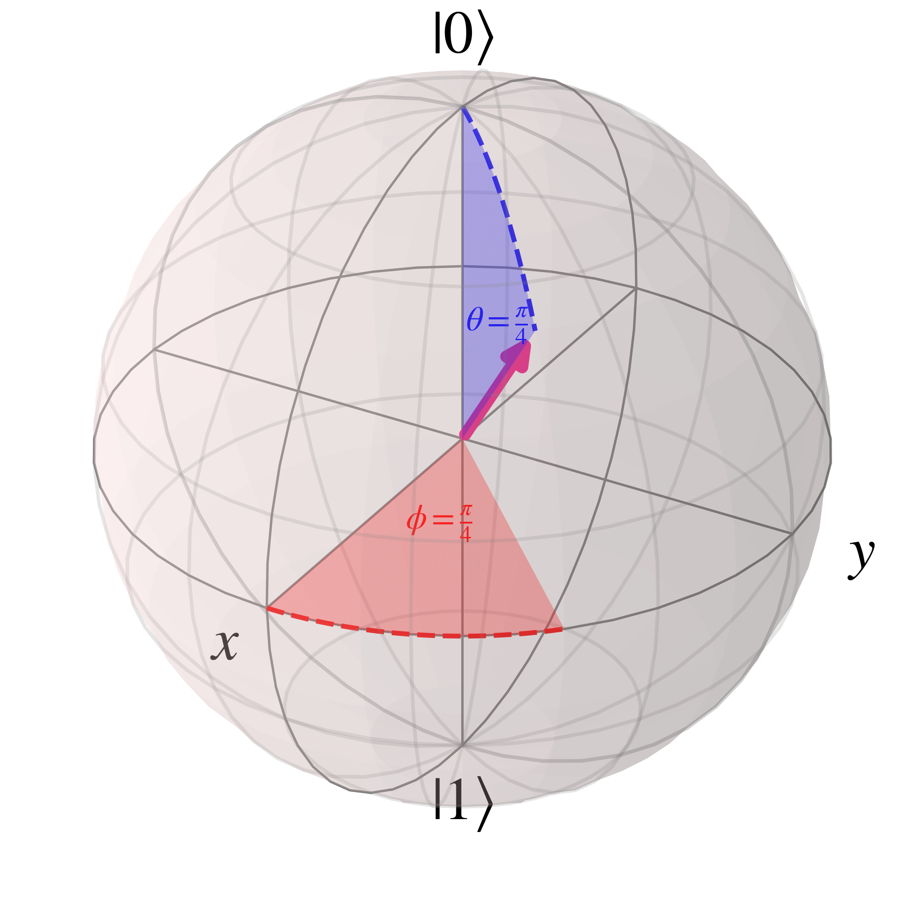
Without going too far into the details, the sine, cosine and exponential functions in the qubit state vary with angles as shown below
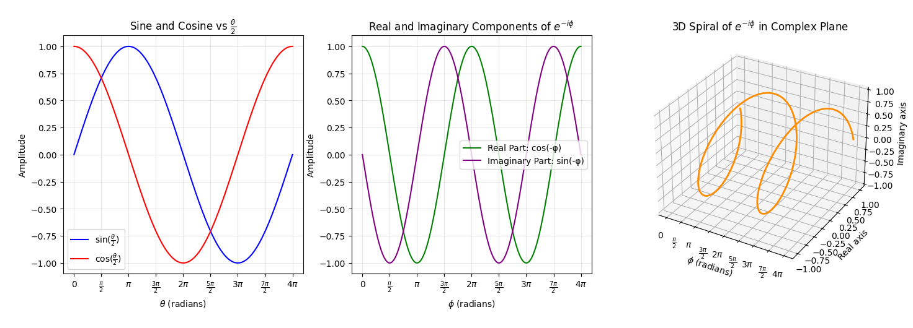
The sine, cosine and exponential functions all repeat with a periodicity of $2\pi$, it's just that in the case of $\sin{\frac{\theta}{2}}$ and $\cos{\frac{\theta}{2}}$ the argument is $\frac{\theta}{2}$, leading to a periodicity of $4\pi$. Radians, which is the unit for rotational movement referred to here, can also be converted into degrees, with $2\pi$ radians being equivalent to the $360$ degrees of a circle.
In the computational basis state $\ket{0}$, $\theta=0$ so the Bloch vector is vertically upwards along the positive 'z' axis
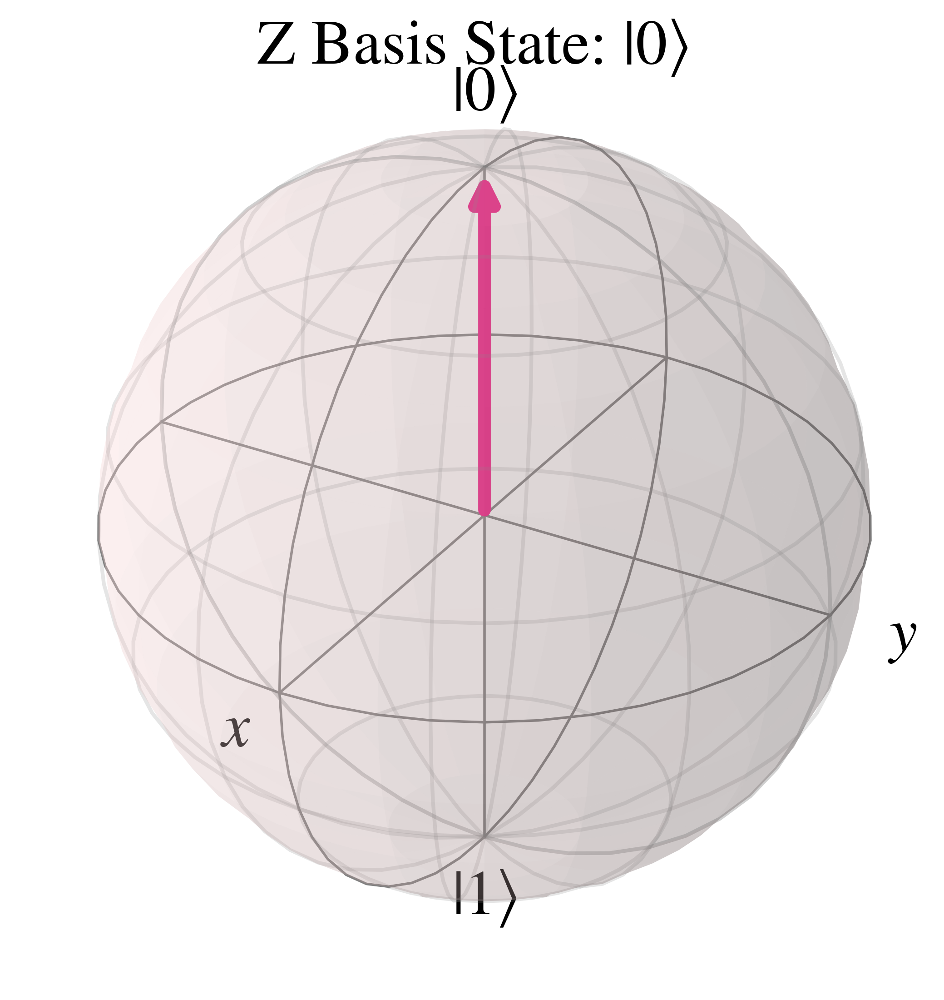
For the orthogonal state in the computational basis $\ket{1}$, $\theta=\pi$ so the Bloch vector is vertically downwards along the negative 'z' axis
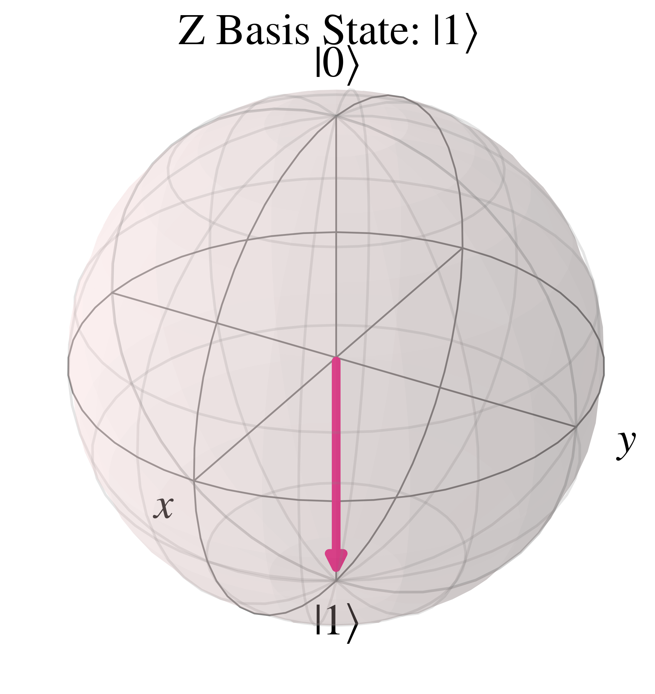
Two other orthonormal basis sets are the $(\ket{+}, \ket{-})$ basis states and the $(\ket{+i}, \ket{-i})$ basis states. In these states $\theta=\frac{\pi}{2}$, which leads to $\cos(\frac{\pi}{4})=\sin(\frac{\pi}{4})=\frac{1}{\sqrt{2}}$, hence these basis states are 'equatorial' and along the 'xy' plane bisecting the Bloch sphere.
First, starting with the $\ket{+}$ and $\ket{-}$ states, these have the 'relative' phase $\phi$ of respectively $0$ and $\pi$, which when substituted into $e^{i\phi}$ leads to $e^{0}=1$ and $e^{i\pi}=-1$ respectively, hence \begin{align} \ket{+}&=\frac{1}{\sqrt{2}}(\ket{0}+\ket{1}) \\ &=\frac{1}{\sqrt{2}}\begin{bmatrix}1 \\ 1\end{bmatrix} \\ \ket{-}&=\frac{1}{\sqrt{2}}(\ket{0}-\ket{1}) \\ &=\frac{1}{\sqrt{2}}\begin{bmatrix}1 \\ -1\end{bmatrix} \\ \end{align}
On the Bloch sphere, $\ket{+}$ is along the positive 'x' axis
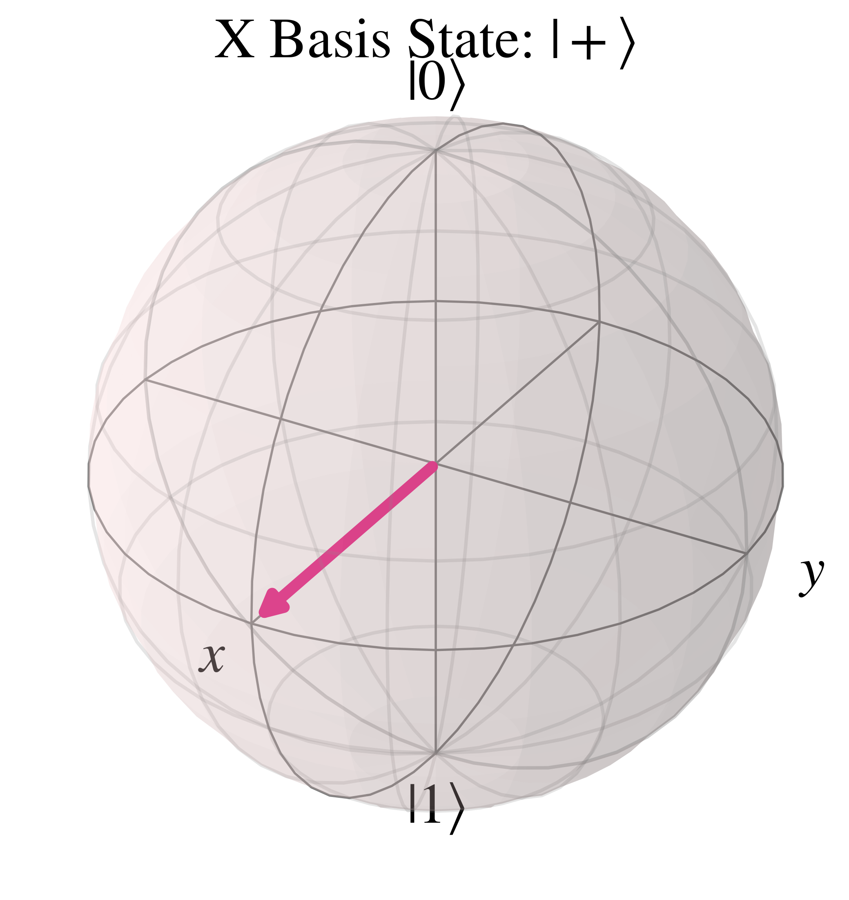
And the orthonormal basis state $\ket{-}$ points to the opposite side of the Bloch sphere, along the negative 'x' axis
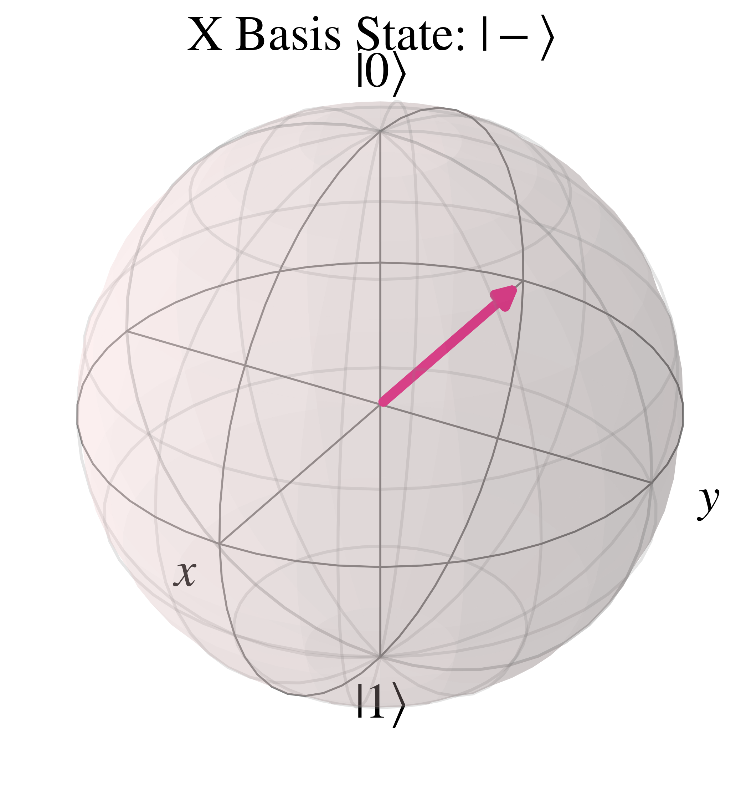
Secondly, the $\ket{+i}$ and $\ket{-i}$ states have the relative phase $\phi$ of respectively $\frac{\pi}{2}$ and $\frac{3\pi}{2}$, leading to $e^{i\frac{\pi}{2}}=i$ and $e^{i\frac{3\pi}{2}}=-i$, so
\begin{align} \ket{+i}&=\frac{1}{\sqrt{2}}(\ket{0}+i\ket{1}) \\ &=\frac{1}{\sqrt{2}}\begin{bmatrix}1 \\ i\end{bmatrix} \\ \ket{-i}&=\frac{1}{\sqrt{2}}(\ket{0}-i\ket{1}) \\ &=\frac{1}{\sqrt{2}}\begin{bmatrix}1 \\ -i\end{bmatrix} \\ \end{align}
The Bloch sphere representation of the $\ket{+i}$ state is along the positive 'y' axis
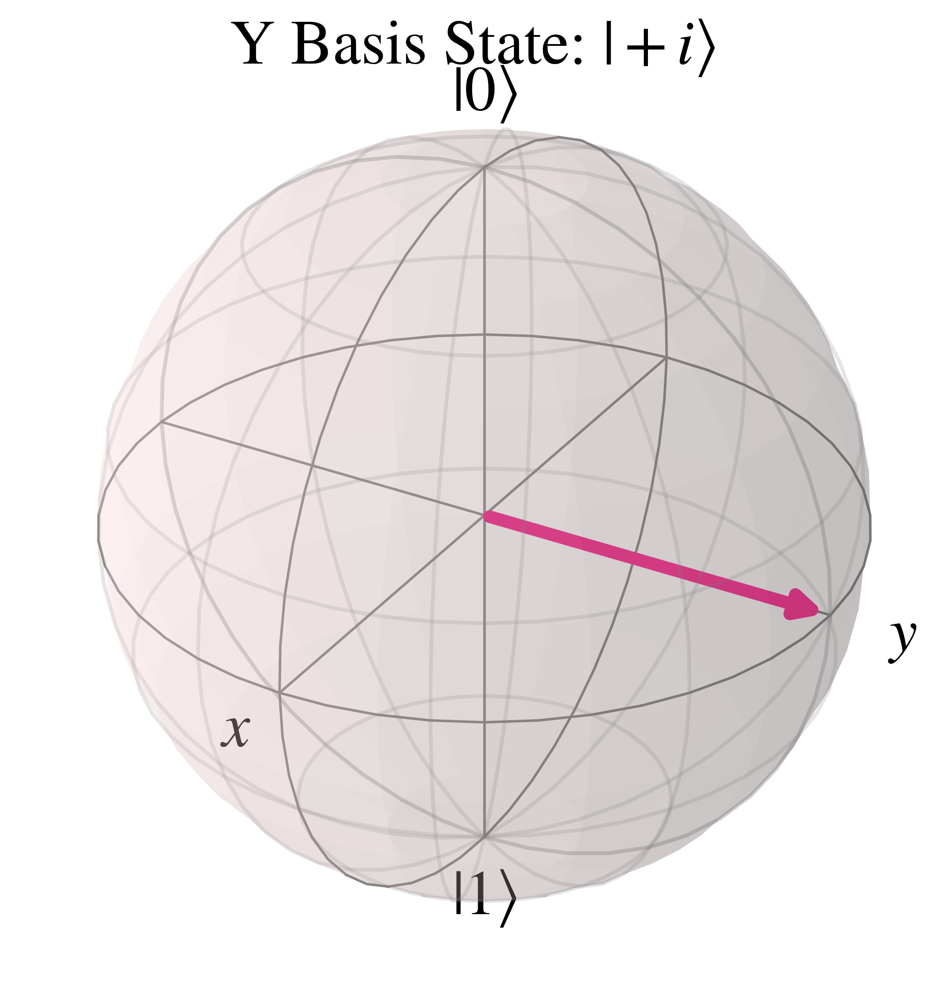
The orthonormal $\ket{-i}$ state is in the opposite direction, along the negative 'y' axis
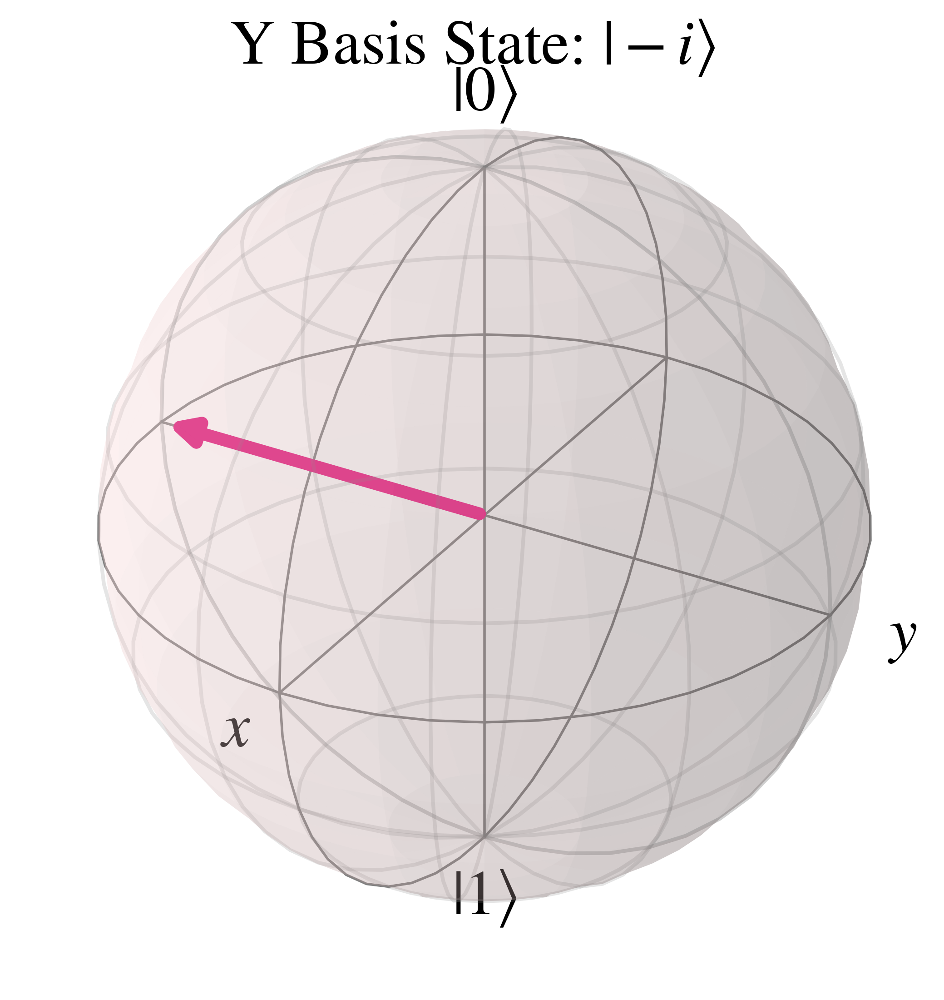
Now that we've covered the basics of quantum mechanics, qubits, and methods of representing them, we will explore how circuits can be constructed to perform computation in this section.
As noted previously while describing the 2nd postulate on the evolution of closed systems, the evolution of individual qubits can be described by gates which act on qubit states. Such unitary gates, both single qubit and multi-qubit, can be used with qubits to construct quantum circuits.
This section first will start out with single qubit gates, before expanding to multi-qubit gates, providing examples and visualisations throughout.
Single qubit gates can be represented by unitary square matrices of dimension $2\times 2$ which act on a qubit state $\ket{\psi}$. Such a unitary property of a given gate $U$, that their Hermitian conjugate $U^{\dagger}$ is their inverse $U^{\dagger}=U^{-1}$, means that applying a Hermitian conjugate of a gate is equivalent to reversing an operation on a given qubit, as seen below where $\ket{\psi}$ evolves to $\ket{\psi'}$ and then is reversed back to $\ket{\psi}$: \begin{align} U^{\dagger} U \ket{\psi} &= U^{\dagger} \ket{\psi'} \\ &= \ket{\psi} \end{align}
Note, that for gate in matrix representation the rightmost gate ($U$ in this case) is applied first then the one to the left ($U^{\dagger}$ here) is applied afterwards.
Such a reversible property is also an essential requirement for quantum circuits to obey, because the converse property of irreversibility indicates the irrecoverable loss of information, since the previous state cannot be reconstructed. The exception to this are measurements, which are placed at the end of a circuit to obtain a classical output by collapsing the superposition of measured qubits.
Three archetypal gates are the Pauli gates X, Y and Z.
\begin{align} X &= \begin{bmatrix} 0 & 1 \\ 1 & 0 \end{bmatrix}\\ Y &= \begin{bmatrix} 0 & -i \\ i & 0 \end{bmatrix}\\ Z &= \begin{bmatrix} 1 & 0 \\ 0 & -1 \end{bmatrix} \end{align}
Their circuit representation, and their effect on the general qubit state $\alpha\ket{0} + \beta\ket{1}$ is
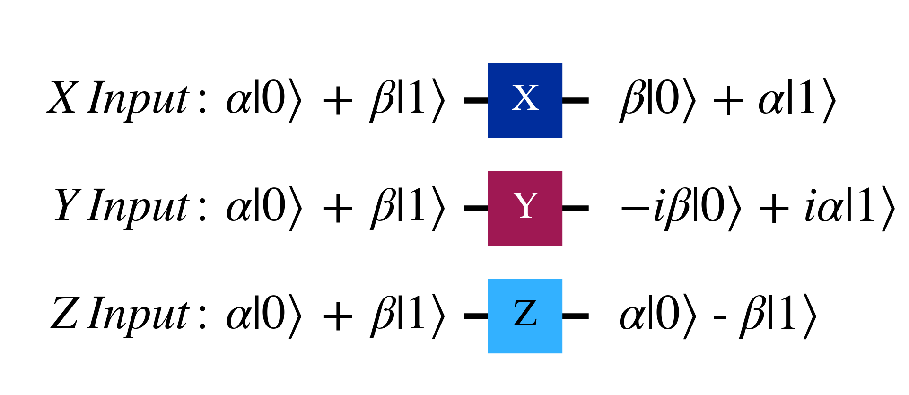
The circuit representation is read from left to right, with the rightward direction indicating the progress of time, and the lines represent qubits which can be acted on by gates, such as the Pauli gates as seen above.
Pauli $X$ gates are the quantum equivalent of the 'Not' gate, swapping the coefficients of the $\ket{0}$ and $\ket{1}$ states, so applying it is referred to as a 'bit flip' with the following action on the computational basis $\ket{0}$ and $\ket{1}$. \begin{align} X\ket{0} &= \begin{bmatrix} 0 & 1 \\ 1 & 0 \end{bmatrix} \begin{bmatrix} 1 \\ 0 \end{bmatrix} \\ &= \begin{bmatrix} 0 \\ 1 \end{bmatrix}\\ &= \ket{1}\\ X\ket{1} &= \begin{bmatrix} 0 & 1 \\ 1 & 0 \end{bmatrix} \begin{bmatrix} 0 \\ 1 \end{bmatrix} \\ &= \begin{bmatrix} 1 \\ 0 \end{bmatrix}\\ &= \ket{0} \end{align}
The eigenvectors of the $X$ gate are the $\ket{+}$ and $\ket{-}$ basis states, which act as the positive and negative 'x' direction on the Bloch sphere. Note that the eigenvalues only affect the 'global phase', and thus do not affect the measurement statistics of the qubit in question. \begin{align} X\ket{+} &= \frac{1}{\sqrt{2}} \begin{bmatrix} 0 & 1 \\ 1 & 0 \end{bmatrix} \begin{bmatrix} 1 \\ 1 \end{bmatrix} \\ &= \frac{1}{\sqrt{2}} \begin{bmatrix} 1 \\ 1 \end{bmatrix}\\ &= \ket{+}\\ X\ket{-} &= \frac{1}{\sqrt{2}} \begin{bmatrix} 0 & 1 \\ 1 & 0 \end{bmatrix} \begin{bmatrix} 1 \\ -1 \end{bmatrix} \\ &= \frac{1}{\sqrt{2}} \begin{bmatrix} -1 \\ 1 \end{bmatrix}\\ &= (-1)\frac{1}{\sqrt{2}} \begin{bmatrix} 1 \\ -1 \end{bmatrix}\\ &= -\ket{-} \end{align}
The spectral decomposition of the $X$ gate is thus $\ket{+}\bra{+}-\ket{-}\bra{-}$, which can also be shown below
\begin{align} X &= \ket{+}\bra{+}-\ket{-}\bra{-}\\ &= \frac{1}{2}(\ket{0}+\ket{1})(\bra{0}+\bra{1}) - \frac{1}{2}(\ket{0}-\ket{1})(\bra{0}-\bra{1})\\ &= \frac{1}{2}(\ket{0}\bra{0}+\ket{0}\bra{1}+\ket{1}\bra{0}+\ket{1}\bra{1})\\ &- \frac{1}{2}(\ket{0}\bra{0}-\ket{0}\bra{1}-\ket{1}\bra{0}+\ket{1}\bra{1})\\ &= \ket{0}\bra{1}+\ket{1}\bra{0}\\ &= \begin{bmatrix} 0 & 1 \\ 1 & 0 \end{bmatrix} \end{align}
Pauli $Z$ gates instead multiplies the 'phase' on the $\ket{1}$ state by $-1$, and hence the application of the $Z$ is referred to as a 'phase flip' with the following swapping action on the $\ket{+}$ and $\ket{-}$ basis states \begin{align} Z\ket{+} &= \frac{1}{\sqrt{2}} \begin{bmatrix} 1 & 0 \\ 0 & -1 \end{bmatrix} \begin{bmatrix} 1 \\ 1 \end{bmatrix} \\ &= \begin{bmatrix} 1 \\ -1 \end{bmatrix}\\ &= \ket{-}\\ Z\ket{-} &= \frac{1}{\sqrt{2}} \begin{bmatrix} 1 & 0 \\ 0 & -1 \end{bmatrix} \begin{bmatrix} 1 \\ -1 \end{bmatrix} \\ &= \begin{bmatrix} 1 \\ 1 \end{bmatrix}\\ &= \ket{+} \end{align}
In a similar manner to the $X$ gate, the eigenvectors of the Pauli $Z$ gate are the positive and negative 'z' directions on the Bloch sphere, the computational basis states $\ket{0}$ and $\ket{1}$, leading to the spectral decomposition $Z=\ket{0}\bra{0}-\ket{1}\bra{1}$.
The Pauli Y gate can be seen as a combined 'bit flip' and 'phase flip' with the relation $Y=iXZ$ as shown below, keeping in mind that the factor of $i$ is part of the global phase that does not affect measurement statistics \begin{align} i XZ &= i \begin{bmatrix} 0 & 1 \\ 1 & 0 \end{bmatrix} \begin{bmatrix} 1 & 0 \\ 0 & -1 \end{bmatrix} \\ &= i \begin{bmatrix} 0 & -1 \\ 1 & 0 \end{bmatrix} \\ &= \begin{bmatrix} 0 & -i \\ i & 0 \end{bmatrix} \end{align}
Similarly to the $X$ and $Z$ gates, the $Y$ gate eigenvectors are the positive and negative 'y' directions on the Bloch sphere, or the $\ket{i}$ and $\ket{-i}$ basis states \begin{align} Y\ket{i} &= \frac{1}{\sqrt{2}} \begin{bmatrix} 0 & -i \\ i & 0 \end{bmatrix} \begin{bmatrix} 1 \\ i \end{bmatrix} \\ &= \frac{1}{\sqrt{2}} \begin{bmatrix} -i \cdot i \\ i \end{bmatrix} \\ &= \frac{1}{\sqrt{2}} \begin{bmatrix} 1 \\ i \end{bmatrix} \\ &= \ket{i} \\ Y\ket{-i} &= \frac{1}{\sqrt{2}} \begin{bmatrix} 0 & -i \\ i & 0 \end{bmatrix} \begin{bmatrix} 1 \\ -i \end{bmatrix} \\ &= \frac{1}{\sqrt{2}} \begin{bmatrix} -i \cdot -i \\ i \end{bmatrix} \\ &= \frac{1}{\sqrt{2}} \begin{bmatrix} -1 \\ i \end{bmatrix} \\ &= - \frac{1}{\sqrt{2}} \begin{bmatrix} 1 \\ -i \end{bmatrix} \\ &= -\ket{i} \end{align}
Hence following a similar process to the $X$ gate, the spectral decomposition of $Y$ is $Y=\ket{i}\bra{i}-\ket{i}\bra{-i}$, which can be shown as \begin{align} Y &= \ket{i}\bra{i}-\ket{-i}\bra{-i}\\ &= \frac{1}{2}(\ket{0}+i\ket{1})(\bra{0}-i\bra{1}) - \frac{1}{2}(\ket{0}-i\ket{1})(\bra{0}+i\bra{1})\\ &= \frac{1}{2}(\ket{0}\bra{0} -i\ket{0}\bra{1} + i\ket{1}\bra{0} - i^{2} \ket{1}\bra{1})\\ &- \frac{1}{2}(\ket{0}\bra{0} +i\ket{0}\bra{1} - i\ket{1}\bra{0} - i^{2} \ket{1}\bra{1})\\ &= -i\ket{0}\bra{1}+i\ket{1}\bra{0}\\ &= \begin{bmatrix} 0 & -i \\ i & 0 \end{bmatrix} \end{align}
Key properties of the Pauli matrices are that they are Hermitian, reproduce the identity matrix when applied twice, and are unitary.
Their Hermitian quality is shown in the calculations below \begin{align} X^{\dagger} &= (X^{T})^{*} \\&= (\begin{bmatrix} 0 & 1 \\ 1 & 0 \end{bmatrix}^{T})^{*} \\&= (\begin{bmatrix} 0 & 1 \\ 1 & 0 \end{bmatrix})^{*} \\&= \begin{bmatrix} 0 & 1 \\ 1 & 0 \end{bmatrix} \\&=X\\ Y^{\dagger} &= (Y^{T})^{*} \\&= (\begin{bmatrix} 0 & -i \\ i & 0 \end{bmatrix}^{T})^{*} \\&= (\begin{bmatrix} 0 & i \\ -i & 0 \end{bmatrix})^{*} \\&= \begin{bmatrix} 0 & -i \\ i & 0 \end{bmatrix} \\&=Y\\ Z^{\dagger} &= (Z^{T})^{*} \\&= (\begin{bmatrix} 1 & 0 \\ 0 & -1 \end{bmatrix}^{T})^{*} \\&= (\begin{bmatrix} 1 & 0 \\ 0 & -1 \end{bmatrix})^{*} \\&= \begin{bmatrix} 1 & 0 \\ 0 & -1 \end{bmatrix} \\&= Z \end{align}
\begin{align} XX &= \begin{bmatrix} 0 & 1 \\ 1 & 0 \end{bmatrix} \begin{bmatrix} 0 & 1 \\ 1 & 0 \end{bmatrix} \\&= \begin{bmatrix} 0 \cdot 0 + 1\cdot 1 & 0\cdot 1 + 1\cdot 0 \\ 1\cdot 0 + 0\cdot 1 & 1 \cdot 1 + 0\cdot 0 \end{bmatrix} \\&= \begin{bmatrix} 1 & 0 \\ 0 & 1 \end{bmatrix}\\ YY &= \begin{bmatrix} 0 & -i \\ i & 0 \end{bmatrix} \begin{bmatrix} 0 & -i \\ i & 0 \end{bmatrix} \\&= \begin{bmatrix} 0 \cdot 0 - i \cdot i & 0 \cdot -i -i \cdot 0 \\ i\cdot 0 + 0\cdot i & i\cdot -i + 0\cdot 0 \end{bmatrix} \\&=\begin{bmatrix} 1 & 0 \\ 0 & 1 \end{bmatrix}\\ ZZ &= \begin{bmatrix} 1 & 0 \\ 0 & -1 \end{bmatrix} \begin{bmatrix} 1 & 0 \\ 0 & -1 \end{bmatrix} \\&= \begin{bmatrix} 1\cdot 1 + 0\cdot 0 & 1\cdot 0 + 0\cdot -1 \\ 0\cdot 1 -1\cdot 0 & 0\cdot 0 -1\cdot -1 \end{bmatrix}\\&= \begin{bmatrix} 1 & 0 \\ 0 & 1 \end{bmatrix}\\ \end{align}The unitary property of Pauli matrices naturally arises from their Hermitian nature and their 'square' being equal to the identity matrix $I$. This can be seen by rearranging $XX$ as follows \begin{align} XX &= I\\ X^{-1} X X &= X^{-1} I\\ X &= X^{-1} \end{align} And by substituting in the Hermitian property of $X=X^{\dagger}$, we get the unitary relation $$X^{\dagger} = X^{-1}$$ Which in turn can be rearranged as $$X^{\dagger}X = I$$ Such a derivation similarly holds for the $Y$ and $Z$ Pauli matrices.
Three other important matrices are the Hadamard, S and T matrices
\begin{align} H &= \begin{bmatrix} 1 & 1 \\ 1 & -1 \end{bmatrix}\\ S &= \begin{bmatrix} 1 & 0 \\ 0 & i \end{bmatrix}\\ T &= \begin{bmatrix} 1 & 0 \\ 0 & e^{\frac{i\pi}{4}} \end{bmatrix}\\ \end{align}
The Hadamard gate $H$ unfortunately shares the same symbol with the Hamiltonian, but it should be clear by context which to use.
The Hadamard gate has the useful property of converting states between the Z ($\ket{0}$, $\ket{1}$) and X ($\ket{+}$, $\ket{-}$) basis states as shown below \begin{align} H\ket{0} &= \ket{+} \\ H\ket{1} &= \ket{-} \\ H\ket{+} &= \ket{0} \\ H\ket{-} &= \ket{1} \end{align}
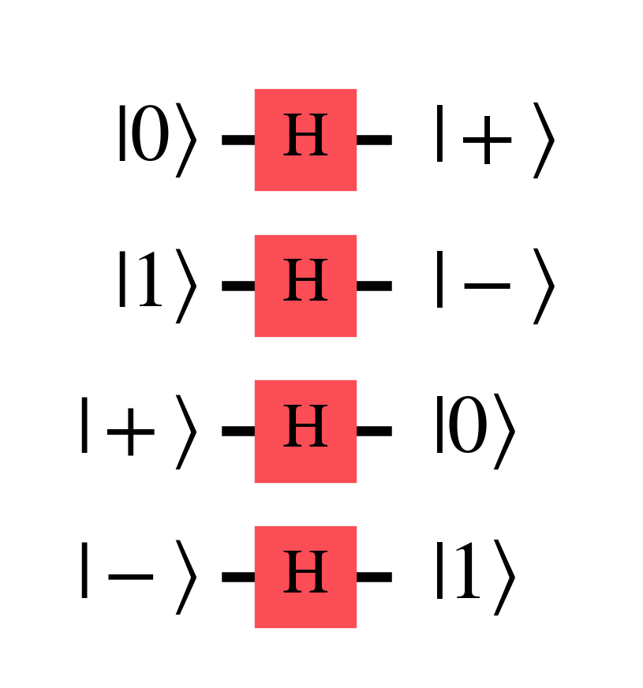
Mathematical properties of $H$ that are useful to keep in mind is that it is Hermitian $H^{\dagger}=H$, squares to the identity $H^{2}=I$, and that $H=\frac{X+Z}{\sqrt{2}}$.
The Z and S gates are related as $Z=SS$ as demonstrated here \begin{align} SS &= \begin{bmatrix} 1 & 0 \\ 0 & i \end{bmatrix} \begin{bmatrix} 1 & 0 \\ 0 & i \end{bmatrix} \\ &= \begin{bmatrix} 1 & 0 \\ 0 & i^{2} \end{bmatrix}\\ &= \begin{bmatrix} 1 & 0 \\ 0 & -1 \end{bmatrix} \end{align}
The S and T gates are similarly related as $S=TT$, and thereby $Z=T^{4}$, due to the square root of $i=e^{i\frac{\pi}{2}}$ being $$\sqrt{e^{i\frac{\pi}{2}}}= (e^{i\frac{\pi}{4}})^{\frac{1}{2}}=e^{i\frac{\pi}{2} \cdot \frac{1}{2}}= e^{i\frac{\pi}{4}}$$
The relation $TT=S$ can also be demonstrated in matrix form as \begin{align} TT &= \begin{bmatrix} 1 & 0 \\ 0 & e^{\frac{i\pi}{4}} \end{bmatrix} \begin{bmatrix} 1 & 0 \\ 0 & e^{\frac{i\pi}{4}} \end{bmatrix} \\ &= \begin{bmatrix} 1 & 0 \\ 0 & e^{\frac{i\pi}{4}} \cdot e^{\frac{i\pi}{4}} \end{bmatrix}\\ &= \begin{bmatrix} 1 & 0 \\ 0 & e^{\frac{i\pi}{2}} \end{bmatrix} \end{align}
The $S$ gate converts between the X ($\ket{+}$, $\ket{-}$) and Y ($\ket{i}$, $\ket{-i}$) basis state, though unlike the $H$ since it is not Hermitian the mapping between states is not two way \begin{align} S\ket{+} &= \frac{1}{\sqrt{2}} \begin{bmatrix} 1 & 0 \\ 0 & i \end{bmatrix} \begin{bmatrix} 1 \\ 1 \end{bmatrix}\\ &= \frac{1}{\sqrt{2}} \begin{bmatrix} 1 \\ i \end{bmatrix} \\ &= \ket{i} \\ S\ket{i} &= \frac{1}{\sqrt{2}} \begin{bmatrix} 1 & 0 \\ 0 & i \end{bmatrix} \begin{bmatrix} 1 \\ i \end{bmatrix}\\ &= \frac{1}{\sqrt{2}} \begin{bmatrix} 1 \\ -1 \end{bmatrix} \\ &= \ket{-} \\ S\ket{-} &= \frac{1}{\sqrt{2}} \begin{bmatrix} 1 & 0 \\ 0 & i \end{bmatrix} \begin{bmatrix} 1 \\ -1 \end{bmatrix}\\ &= \frac{1}{\sqrt{2}} \begin{bmatrix} 1 \\ -i \end{bmatrix} \\ &= \ket{-i} \\ S\ket{-i} &= \frac{1}{\sqrt{2}} \begin{bmatrix} 1 & 0 \\ 0 & i \end{bmatrix} \begin{bmatrix} 1 \\ -i \end{bmatrix}\\ &= \frac{1}{\sqrt{2}} \begin{bmatrix} 1 \\ 1 \end{bmatrix} \\ &= \ket{+} \\ \end{align}
Such S gate rotations can also be visualised on the Bloch sphere as
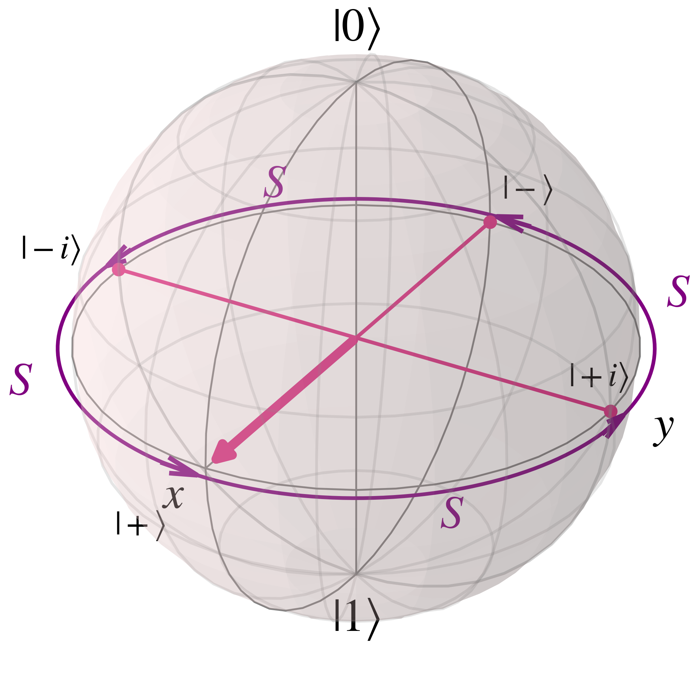
As seen above the S gate, and thus the Z and T gates, rotate around the Z axis in the Bloch sphere. A similar statement can be made regarding the X and Y gates which respectively rotate qubit states around the x and y axes as shown below.
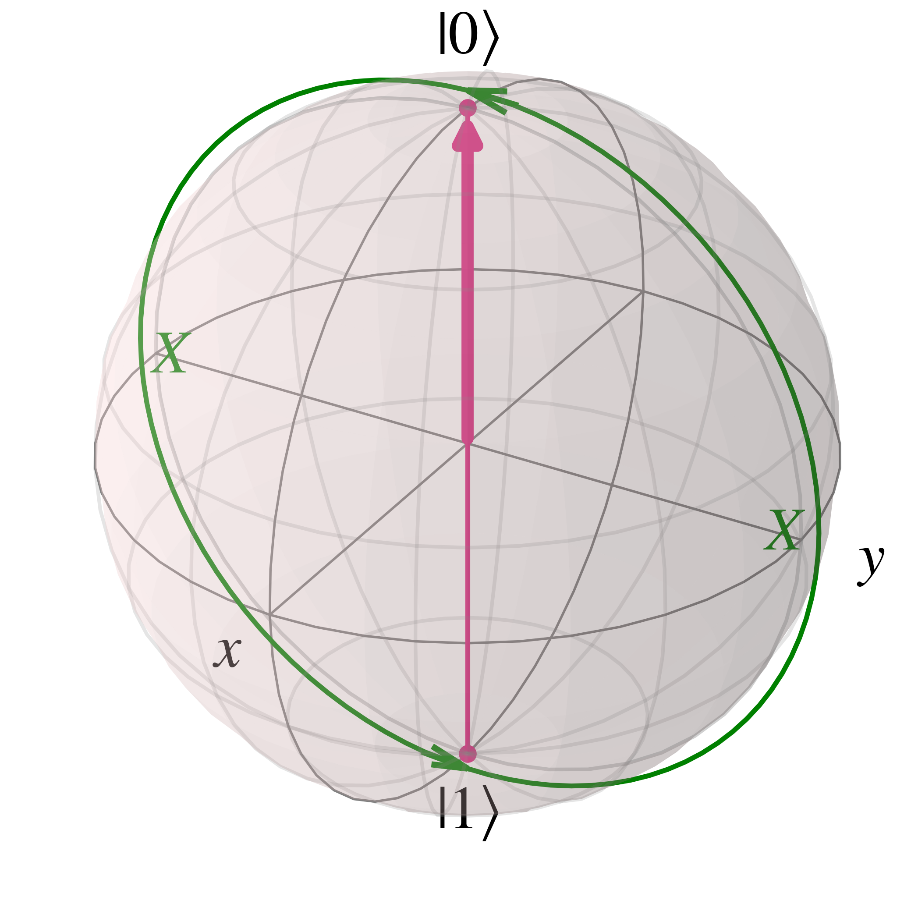
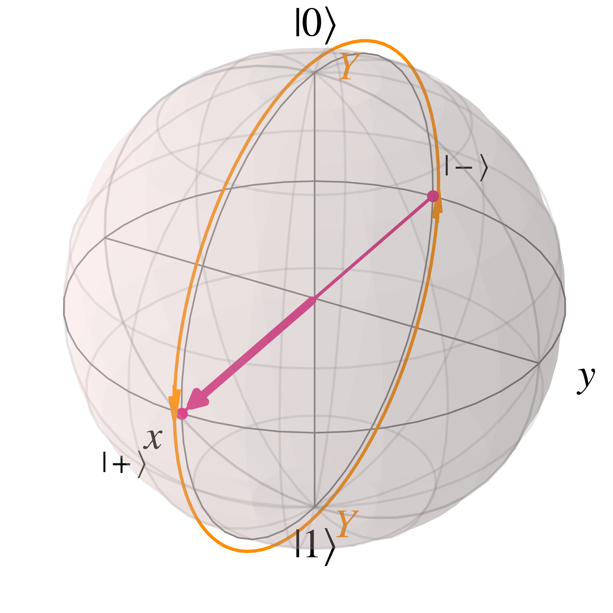
Generalising the rotational nature of the Pauli matrices, more general rotational matrices along each axis can be posited using the following relation for the exponential of matrix $A$, which will not be explained here for brevity's sake $$e^{i A x} = \cos(x) I - i\sin(x) A$$
For the rotational gate along the x axis, $R_{X}(\theta) = e^{\frac{-i\theta X}{2}}$, this is derived as \begin{align} R_{X}(\theta) &= e^{\frac{-i\theta X}{2}}\\ &= \cos(\frac{\theta}{2}) I - i \sin(\frac{\theta}{2}) X \\ &= \cos(\frac{\theta}{2}) \begin{bmatrix} 1 & 0 \\ 0 & 1 \end{bmatrix} - i \sin(\frac{\theta}{2}) \begin{bmatrix} 0 & 1 \\ 1 & 0 \end{bmatrix}\\ &= \begin{bmatrix} \cos(\frac{\theta}{2}) & - i \sin(\frac{\theta}{2}) \\ - i \sin(\frac{\theta}{2}) & \cos(\frac{\theta}{2}) \end{bmatrix} \end{align}
Such a rotation is an anti-clockwise rotation with the positive X pointing out of plane as shown in the image below for an angle of $\theta=\frac{\pi}{4}$ radians$=45$ degrees, with $R_{X}(\frac{\pi}{4})$ acting on $\ket{0}$
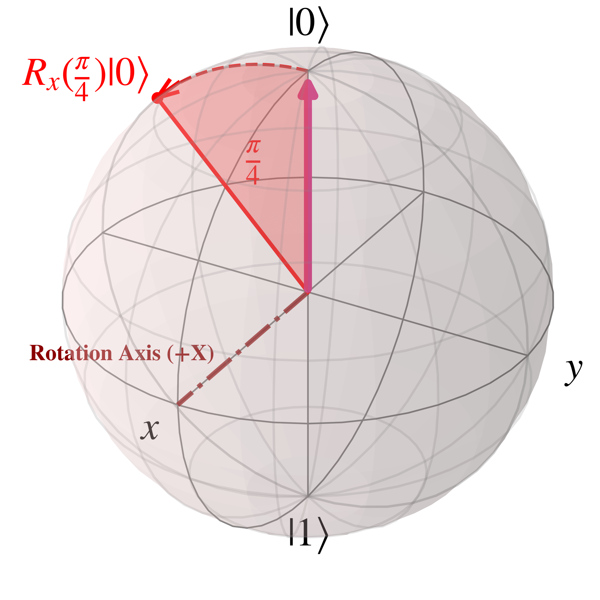
This follows a convention called the 'right-hand' rule which can be visualised with a right hand with a thumb sticking out and a half-curled fist. The thumb aligns with the axis of rotation, in this case the positive x axis, and the curved fingers indicate the direction of rotation.
Similarly the Z rotation gate is $R_{Z}(\theta)= e^{\frac{-i\theta Z}{2}}$, and the Y rotation gate is $R_{Y}(\theta)=e^{\frac{-i\theta Y}{2}}$.
For $R_Y$, the matrix form is derived as \begin{align} R_{Y}(\theta) &= e^{\frac{-i\theta Y}{2}}\\ &= \cos(\frac{\theta}{2}) I - i \sin(\frac{\theta}{2}) Y \\ &= \cos(\frac{\theta}{2}) \begin{bmatrix} 1 & 0 \\ 0 & 1 \end{bmatrix} - i \sin(\frac{\theta}{2}) \begin{bmatrix} 0 & -i \\ i & 0 \end{bmatrix}\\ &= \begin{bmatrix} \cos(\frac{\theta}{2}) & i^{2} \sin(\frac{\theta}{2}) \\ -i^{2} \sin(\frac{\theta}{2}) & \cos(\frac{\theta}{2}) \end{bmatrix}\\ &= \begin{bmatrix} \cos(\frac{\theta}{2}) & - \sin(\frac{\theta}{2}) \\ \sin(\frac{\theta}{2}) & \cos(\frac{\theta}{2}) \end{bmatrix} \end{align}
When $R_{Y}(\frac{\pi}{4})$ is applied to $\ket{0}$ the rotation along the Bloch sphere is
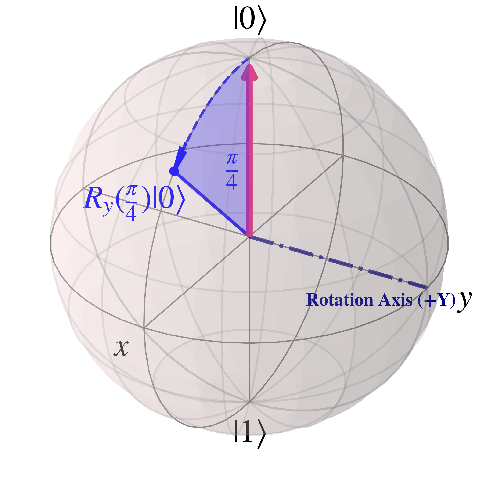
For $R_Z$ the matrix is \begin{align} R_{Z}(\theta) &= e^{\frac{-i\theta Z}{2}}\\ &= \cos(\frac{\theta}{2}) I - i \sin(\frac{\theta}{2}) Y \\ &= \cos(\frac{\theta}{2}) \begin{bmatrix} 1 & 0 \\ 0 & 1 \end{bmatrix} - i \sin(\frac{\theta}{2}) \begin{bmatrix} 1 & 0 \\ 0 & -1 \end{bmatrix}\\ &= \begin{bmatrix} \cos(\frac{\theta}{2}) - i\sin(\frac{\theta}{2}) & 0 \\ 0 & \cos(\frac{\theta}{2}) +i \sin(\frac{\theta}{2}) \end{bmatrix} \end{align}
Where the trigonometric relations $e^{-i\phi}=\cos(\phi)-i \sin(\phi)$ and $e^{i\phi}=\cos(\phi)+i \sin(\phi)$ can be used, along with taking a factor out of the matrix, to simplify the $R_{Z}(\theta)$ matrix as follows \begin{align} R_{Z}(\theta) &= \begin{bmatrix} \cos(\frac{\theta}{2}) - i\sin(\frac{\theta}{2}) & 0 \\ 0 & \cos(\frac{\theta}{2}) +i \sin(\frac{\theta}{2}) \end{bmatrix}\\ &= \begin{bmatrix} e^{-i\frac{\theta}{2}} & 0 \\ 0 & e^{i\frac{\theta}{2}} \end{bmatrix}\\ &= e^{-i\frac{\theta}{2}} \begin{bmatrix} 1 & 0 \\ 0 & e^{i\theta} \end{bmatrix}\\ &= \begin{bmatrix} 1 & 0 \\ 0 & e^{i\theta} \end{bmatrix} \end{align}
Where above the global phase factor has been moved out of the matrix and discarded.
$R_{Z}(\frac{\pi}{4})$ is equivalent to the $T$ gate, and can be visualised as
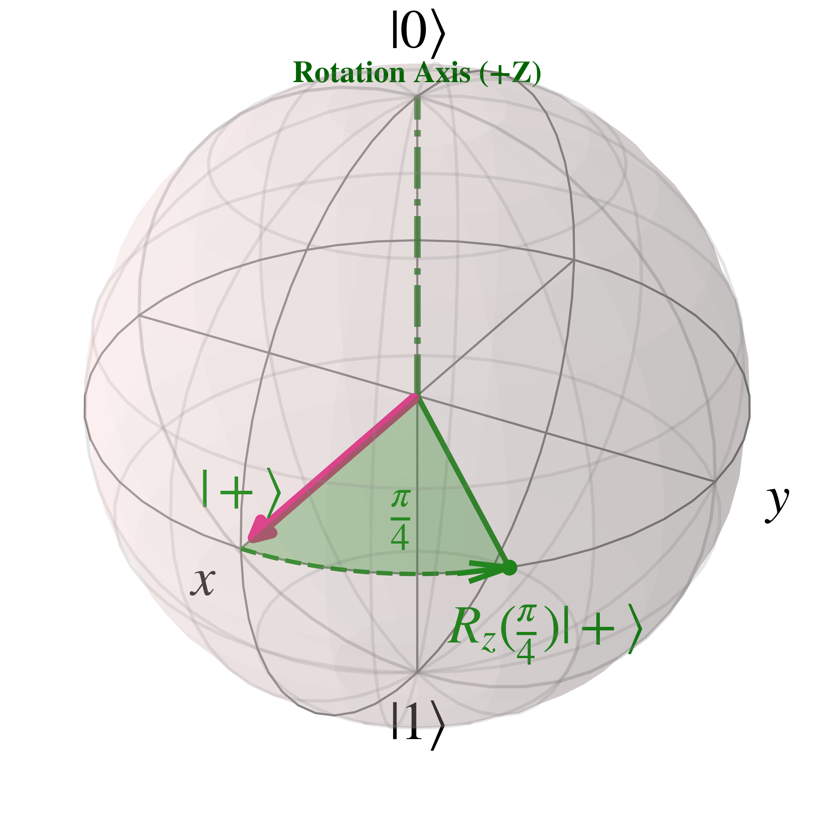
With these three rotation matrices, which are themselves composed of the identity matrix and the Pauli matrices, single qubit states can rotate all around the Bloch sphere.
To construct practical circuits, we need more than just single qubit gates; we need multi-qubit ones, such as the 'Controlled Not' or '$C_{NOT}$' gate.
The $C_{NOT}$ gate is a form of controlled operation, where if the value of the 'control' qubit is $\ket{1}$ then the $X$ gate (an equivalent to the classical 'NOT' gate) is applied on the 'target' qubit, thus flipping it's value. For this reason, the $C_{NOT}$ gate is also called the 'controlled X' or $C_{X}$ gate. A visualisation of the CNOT gate is given below
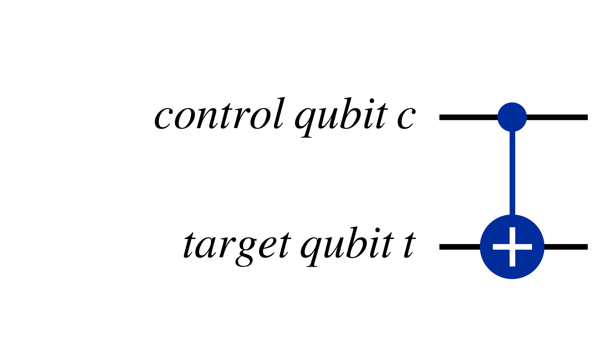
Another way of representing such a relation is $$\ket{c}\ket{t} \rightarrow \ket{c}\ket{t \oplus c}$$
Where, $\oplus$ is modulo two addition operation, which only returns '1' if exactly one of the two bits it is acting on is '1' (and the other is '0') as shown below \begin{align} \ket{0 \oplus 0} &= \ket{0}\\ \ket{0 \oplus 1} &= \ket{1}\\ \ket{1 \oplus 0} &= \ket{1}\\ \ket{1 \oplus 1} &= \ket{0} \end{align}
It's worth noting that multi-qubit gates are also unitary and thus reversible, which can be seen in the case of the $C_{NOT}$ gate; if the CNOT gate is applied twice then it is equivalent to reverting the bit-flip of the target qubit.
In matrix form, the $C_{NOT}$ gate is \begin{align}C_{NOT}= \begin{bmatrix} 1 & 0 & 0 & 0\\ 0 & 1 & 0 & 0 \\ 0 & 0 & 0 & 1 \\ 0 & 0 & 1 & 0 \end{bmatrix} \end{align}
Together with the $H$, $T$ and $S$ single qubit gates the $C_{NOT}$ gate forms a 'universal gate-set' called the 'Clifford-T' group.
A universal gate-set is a set of gates which can approximate, and thus reproduce, any possible quantum operation on a quantum circuit; the proof of universal gate sets being able to approximate any unitary operations is beyond the scope of this tutorial, and will have to be read as further reading (such as section 4.5 of 'Quantum Computation and Quantum Information' by Nielsen and Chuang) if you're interested.
An interesting trick for the $C_{NOT}$ gate is flipping the control and target qubits is by applying the Hadamard gates to qubit states before and after as shown below effectively flips the control and target qubits
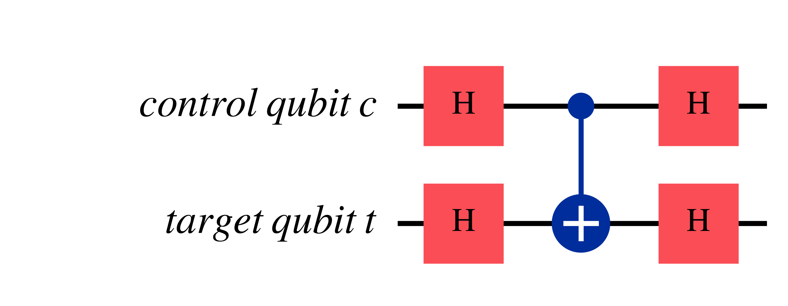
So this circuit is equivalent to the following $C_{NOT}$ gate with swapped target and control qubits
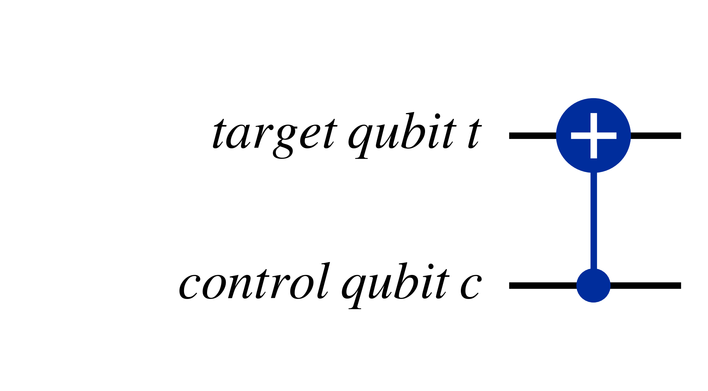
This is because applying the Hadamard shifts the qubit to the {$\ket{+}$,$\ket{-}$} basis \begin{align} \ket{0}\ket{0} &\rightarrow \ket{+}\ket{+} \\ \ket{1}\ket{0} &\rightarrow \ket{-}\ket{+} \\ \ket{0}\ket{1} &\rightarrow \ket{+}\ket{-} \\ \ket{1}\ket{1} &\rightarrow \ket{-}\ket{-} \end{align}
Where applying the $C_{NOT}$ results in the following, where the first qubit flips between $\ket{+}$ and $\ket{-}$ if the second qubit is $\ket{-}$ \begin{align} \ket{+}\ket{+} &\rightarrow \ket{+}\ket{+} \\ \ket{-}\ket{+} &\rightarrow \ket{-}\ket{+} \\ \ket{+}\ket{-} &\rightarrow \ket{-}\ket{-} \\ \ket{-}\ket{-} &\rightarrow \ket{+}\ket{-} \end{align}
This inverted effect of the $C_{NOT}$ can be seen with the example of $\ket{+}\ket{-}$, which can be expanded as \begin{align} \ket{+}\ket{-} &= \frac{1}{2} (\ket{0}+\ket{1})(\ket{0}-\ket{1})\\ \ket{+}\ket{-} &= \frac{1}{2} (\ket{0}\ket{0}-\ket{0}\ket{1}+\ket{1}\ket{0}-\ket{1}\ket{1})\\ \end{align} And then applying a $C_{NOT}$ with the first qubit $\ket{+}$ as the control qubit and the second qubit $\ket{-}$ as the target qubit leads to \begin{align} &= \frac{1}{2} (\ket{0}\ket{0}-\ket{0}\ket{1}+\ket{1}\ket{1}-\ket{1}\ket{0})\\ &= \frac{1}{2} (\ket{0}-\ket{1})(\ket{0}-\ket{1})\\ &= \ket{-}\ket{-} \end{align}
Lastly, by applying the Hadamard gates again, the qubit states convert back into the computational basis \begin{align} \ket{+}\ket{+} &\rightarrow \ket{0}\ket{0} \\ \ket{-}\ket{+} &\rightarrow \ket{1}\ket{0} \\ \ket{-}\ket{-} &\rightarrow \ket{1}\ket{1} \\ \ket{+}\ket{-} &\rightarrow \ket{0}\ket{1} \end{align} Which, as a comparison with the starting results indeed exhibit a bit flip in the first qubit if the second qubit is $\ket{0}$, as shown below \begin{align} \ket{0}\ket{0} &\rightarrow \ket{0}\ket{0} \\ \ket{1}\ket{0} &\rightarrow \ket{1}\ket{0} \\ \ket{0}\ket{1} &\rightarrow \ket{1}\ket{1} \\ \ket{1}\ket{1} &\rightarrow \ket{0}\ket{1} \end{align}
A more general controlled unitary gate is $C_U$ which is below
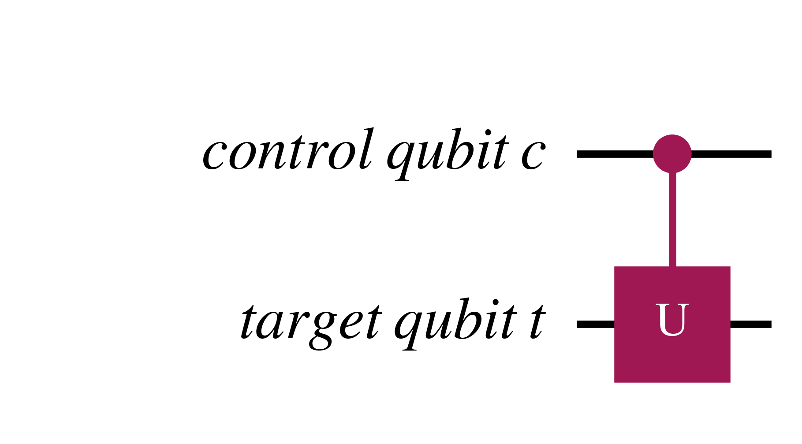
The $C_U$ qubit can also be represented as $$\ket{c}\ket{t} \rightarrow \ket{c} U^{c}\ket{t}$$
Where above, $U$ only acts if $c=1$, and otherwise $U^{0}=I$.
The swap gate is another multi-qubit gate which swaps two qubit states
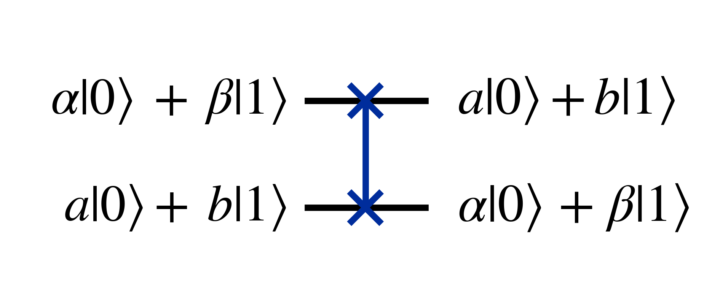
Which in matrix form is \begin{align} \begin{bmatrix} 1 & 0 & 0 & 0\\ 0 & 0 & 1 & 0 \\ 0 & 1 & 0 & 0 \\ 0 & 0 & 0 & 1 \end{bmatrix} \end{align}
The swap gate can be composed of three $C_{NOT}$ gates as seen below
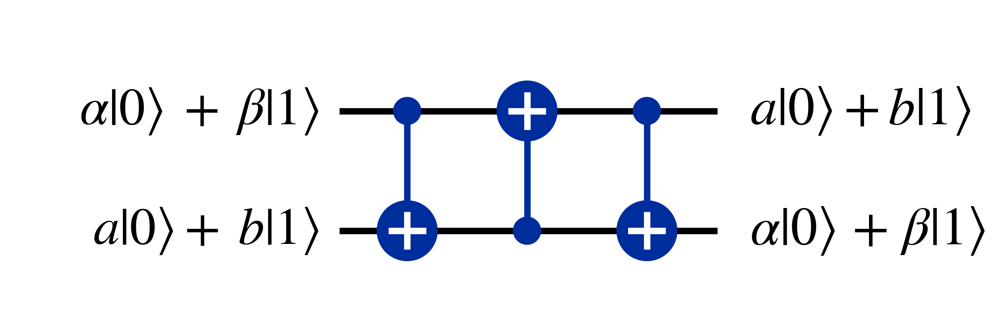
This can be seen by running the following general two qubit state through the three $C_{NOT}$ gates $$(\alpha\ket{0}+\beta\ket{1})\otimes(a\ket{0}+b\ket{1})$$ Which when expanded is $$\alpha a \ket{00} + \alpha b \ket{01} + \beta a \ket{10} + \beta b \ket{11}$$
After the first $C_{NOT}$ with the first qubit as the control qubit it becomes $$\alpha a \ket{00} + \alpha b \ket{01} + \beta a \ket{11} + \beta b \ket{10}$$
After the second $C_{NOT}$ with the second qubit as the control qubit $$\alpha a \ket{00} + \alpha b \ket{11} + \beta a \ket{01} + \beta b \ket{10}$$
After the third $C_{NOT}$ with the first qubit as the control qubit $$\alpha a \ket{00} + \alpha b \ket{10} + \beta a \ket{01} + \beta b \ket{11}$$
Which can be rearranged as $$(a\ket{0}+b\ket{1})\otimes(\alpha\ket{0}+\beta\ket{1})$$ Where the first and second qubit states have been swapped.
Another useful multi-qubit gate is the Toffoli gate, also known at the 'controlled-controlled-not' gate, which has two control qubits and swaps the target qubit state when both control qubits are $\ket{1}$.
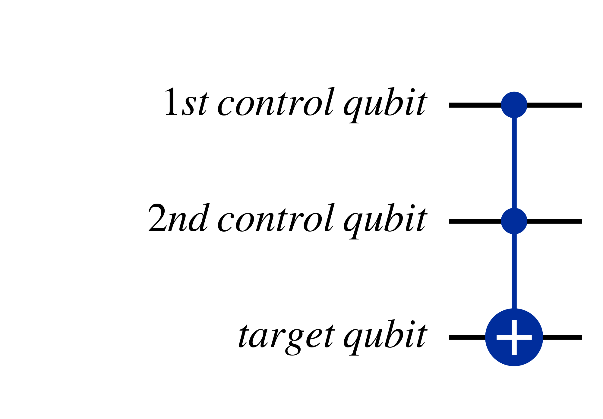
Another useful trick is that by applying bit-flips, through $X$ gates before and after a control qubit, you can cause controlled unitary gates to instead act if the control qubit is $\ket{0}$, as shown in the two equivalent circuits below
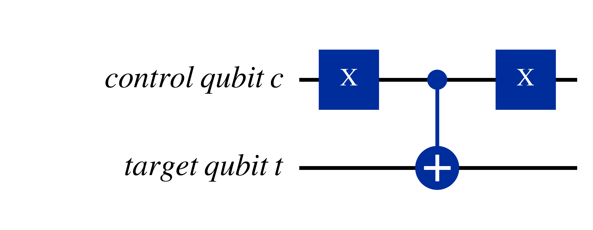
As can be seen above, if the condition for the controlled unitary gate to act is $\ket{0}$, then the 'circle' on the control qubit is empty, while if the condition is instead the standard $\ket{1}$ the circle is filled.
Now that the basics of quantum circuits have been covered, and some examples given, the foundations to understand quantum circuits have been laid.
The next chapter will look at simple quantum circuits demonstrating quantum effects.
To internalise the concepts presented here, it helps to write out derivations with pen-and-paper.
The source YouTube playlist of the course is freely available, along with lecture notes, and definitely worth checking out if you prefer learning in a lecture format. Specifically, I based this chapter on lectures 1.1 and 1.2.
Another recommended resource which I've consulted when writing this, is the seminal textbook 'Quantum Computation and Quantum Information' (10th Anniversary Edition) by Michael Nielsen and Isaac Chuang. While this is unfortunately not freely available, it is worth going through this or another textbook (or a similar resource) and solve questions with pen-and-paper to build a more rigorous understanding after going through this tutorial. In the case of 'Quantum Computation and Quantum Information', I would recommend going through chapter 1, which an overview of quantum computing, and chapter 2 which introduces the maths of quantum mechanics. For further reading on top of this, chapter 4 which introduces quantum circuits with qubits is worth going through.